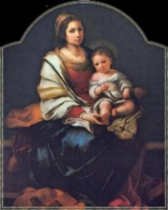
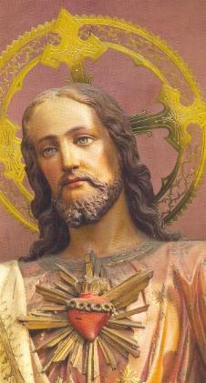
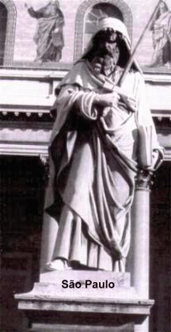

VISÕES BEATÃFICAS-2
XXI – VISÃO Nº 21
1 - Uma vez recebido o SantÃssimo Corpo e Sangue de CRISTO Sacramentado por esta devotÃssima serva de DEUS, naquela referida Capela, o seu espÃrito foi arrebatado em êxtase imóvel e depois móvel. 2 – Mas a seguir, voltando aos seus sentidos naturais, por obediência ao seu pai espiritual, respondeu as suas perguntas dizendo que viu o SENHOR Salvador na sua SantÃssima Humanidade, e com a preciosÃssima chaga lateral do corpo (chaga do lado) por onde via um mar imenso e profundÃssimo.
3 – Na serva bem-aventurada de CRISTO se acenderam o fogo da compaixão e da caridade, então, ela olhou atentamente aquele mar, e de lá saiu uma Voz Divina, dizendo: 4 – “EU sou o Amor ardente, que de súbito atraio a MIM a alma, que coloco num lugar com vida, seguramente em MIM, JESUS CRISTO Redentor. 5 – EU o próprio JESUS faço esta maravilha destruindo os seus pecados. Queimo todos eles com SantÃssimo fervor e coloco a alma num abismo de doçura. EU, o Próprio SENHOR a transformo num tesouro preciosÃssimo e a faço alegrar-se com os bens eternosâ€.
6 – Terminadas estas palavras, lhe foi descrito e revelado plenamente aquela profundidade do abismo (do Amor Divino), conforme citação de João Evangelista: no princÃpio era o VERBO e o VERBO estava com DEUS, e o VERBO era DEUS , etc. (Jo 1, 1). 7 – Depois destas palavras, ela permanecendo em êxtase, ouviu certa voz lhe dizendo: 8 – “EU sou a fonte pura e nobre: Se alguém tem sede, venha a MIM e beba†(Jo 7, 37). Sou conforto (consolo e comodidade) inesgotável: venha a MIM todo aquele que quiser vir, e ti darei alegria, que jamais terá fim. 9 – Humildade com a pureza da obediência e amor com consciente elegância, ao mesmo tempo, juntarão e estreitará a união, e quando estas virtudes se encontram juntas na alma, tal alma estará em condições de beber nesta fonte.
10 – A pobreza pode muito bem ser dividida em três maneiras. A alma quer dar uma direção determinada, seguindo o seu bom coração, caminhando claramente, avançando ligeira para onde fixou e para lá quer se conduzir, se dirigindo bem disposta e aplicada. 11 – A primeira pobreza é aproveitável, ainda que correntemente não seja muito entendida, mas se trata de um espÃrito perfeito e em si, um tesouro espiritual. É flexÃvel em muitas coisas, coisas em geral das quais se afasta com desprezo, por considerar vulgar, quer o Céu sem outras alternativas. 12 – A alma que vive assim poderá beber desta fonte, porque está unida a DEUS, e no caminho ajuda e faz crescer estimulando os necessitados, mas não quer ser vista e nem quer evidência nas coisas que faz, nem propagar o seu conhecimento, quer permanecer oculta.
13 – A segunda pobreza é o abandono do mundo, é a alma que se despoja de todas as coisas, que dá tudo o que tem e sempre se submete obedientemente. Vive na fé, esperança e caridade, e com solidez cultiva o temor de DEUS, por este motivo esta alma também bebe desta fonte.
14 – A terceira pobreza é fundamentada no Amor a DEUS, não se preocupa e não tem medo de nada deste mundo, porque têm o Bem Maior, a Quem entregou todos os dons de sua vida presente. Alegra-se em todos os acontecimentos, vive da mesma maneira que dorme sempre tranquila e confiante, obedece a JESUS em todas as coisas e ao Qual está unida. 15 – Alma com tal mente pura vem beber socegadamente, porque tal fonte te é concedidaâ€.
16 – Por esta razão, essa laboriosa serva devota de CRISTO vendo esta visão beatÃfica, antes de se retirar ouviu certa voz te dizendo: 17 – “Alma, não procure motivos para falar (reclamar, aconselhar ou repreender). Renuncie isto, porque as coisas sendo bem feitas, pode satisfazer o desejo de todas as almas. 18 – Por isso, não mais estabeleça regras, que tu mesma sabe, como era antes. 19 – Por outro lado, ELE que te prometeu Amor, irá te satisfazer muito bem. Portanto, esteja com bastante ardor e boa vontade, e sem nenhuma escrupulosa vergonha, para com ELE sempre te unir. 20 - Na verdade, aproximando-se deste grande Amor é que te possibilitará se conservar bem unida a ELEâ€.
21 – Esta visão beatÃfica foi no mês de Fevereiro de 1432. DEUS seja louvado.
XXII – VISÃO NÚMERO 22
 1 - Uma vez, depois que recebeu o Sacramento
do SantÃssimo Corpo de JESUS CRISTO naquela mesma Capela, o espÃrito da referida
serva de CRISTO foi arrebatado por uma grande e esplendorosa luz, permanecendo
em êxtase o seu corpo, como de costume. 2 – Quando voltou ao seu sentido
natural, por obediência, respondeu as perguntas de seu pai espiritual dizendo
que tinha visto aquela luz especialÃssima com grandes e admiráveis esplendores.
Mas embaixo da luz havia espessas sombras. 3 – Naquela luz, ela viu um fogo
esplendido e acima, estava uma tenda especialÃssima. 4 – Na parte de cima
daquela tenda ela viu o SENHOR e nosso Salvador na sua SantÃssima Humanidade,
lançando muitos esplendores de seu corpo, que o olhar humano só conseguia fixar
muito pouco, 5 – assim, aquela humilde serva de CRISTO não podia fixar a não ser
a imagem humana do SENHOR, pois procediam de suas santÃssimas chagas raios
flamejantes e admiráveis esplendores, 6 – que na verdade, estes raios eram
espargidos sobre as almas que estavam ali mesmo, e elas, ao receber aqueles
raios luminosos, brilhavam maravilhosamente com grande esplendor.
1 - Uma vez, depois que recebeu o Sacramento
do SantÃssimo Corpo de JESUS CRISTO naquela mesma Capela, o espÃrito da referida
serva de CRISTO foi arrebatado por uma grande e esplendorosa luz, permanecendo
em êxtase o seu corpo, como de costume. 2 – Quando voltou ao seu sentido
natural, por obediência, respondeu as perguntas de seu pai espiritual dizendo
que tinha visto aquela luz especialÃssima com grandes e admiráveis esplendores.
Mas embaixo da luz havia espessas sombras. 3 – Naquela luz, ela viu um fogo
esplendido e acima, estava uma tenda especialÃssima. 4 – Na parte de cima
daquela tenda ela viu o SENHOR e nosso Salvador na sua SantÃssima Humanidade,
lançando muitos esplendores de seu corpo, que o olhar humano só conseguia fixar
muito pouco, 5 – assim, aquela humilde serva de CRISTO não podia fixar a não ser
a imagem humana do SENHOR, pois procediam de suas santÃssimas chagas raios
flamejantes e admiráveis esplendores, 6 – que na verdade, estes raios eram
espargidos sobre as almas que estavam ali mesmo, e elas, ao receber aqueles
raios luminosos, brilhavam maravilhosamente com grande esplendor.
7 – Naquele mesmo lugar também estava a Celeste RAINHA ornada com uma trÃplice coroa, como já dissemos anteriormente em outra visão, sobretudo, Dela saÃa uma luz intensa, mas muito suave, 8 – de tal forma que, a luz que vinha do seu FILHO e aquela que procedia da MÃE refletiam sobre as almas existentes naquele mesmo lugar, tornando-as brilhantes. Contudo, não aquela luz que procedia da MÃE. Esta luz tinha uma intensidade até certo ponto, enquanto aquela que procedia de seu FILHO era mais abrangente e intensa, e se derramava sobre as almas.
9 – Ela viu também nesta visão beatÃfica almas nos seus próprios corpos, entrarem num fogo ali existente e saÃrem. 10 – Elas no fogo, efetivamente não passavam por nenhum risco, pois tinham o amor Divino. 11 – Donde aquela bem-aventurada serva de CRISTO desejou saber por que, ou de que natureza eram aquelas almas para caminharem normalmente sobre o fogo! Foi revelada a Francisca que era a Vontade Divina, porque aquelas almas quando estavam nos seres humanos vivos, sempre perseveravam no amor Divino, e estavam naquele fogo para se renovar na força do Amor de DEUS.
12 – A bem-aventurada serva de CRISTO estava admirada e alegre com tanta solenidade, quando se aproximou aquela Maria Madalena, fervorosa no amor a DEUS, junto com Santa Agnes, e a convenceram a se aproximar e também caminhar sobre aquele fogo. 13 – Indo com as referidas, elas puseram a bem-aventurada serva de CRISTO num local mais adequado para que ela visse as coisas que eram feitas naquele lugar. 14 – E viu um grande número de Santas virgens que estavam bastante resplandecentes e ornadas com uma coroa.
15 – E então, aquela Madalena fervorosa de amor por CRISTO começou a dançar e logo foi acompanhada pelas outras virgens. 16 – E que cena admirável, entravam e saiam do fogo dançando, ao mesmo tempo em que cantando, diziam: 17 – “Se alguém deseja entrar no interior do CRISTO, todos devem se despojar inteiramente tanto exteriormente quanto em seu interior, fazendo renúncias e se afastando das vulgaridades como forma de respeito, e mesmo, nem em certa medida querer se mostrar em evidência. As coisas negativas que tem devem ser deixadas e não voltar mais para elas. 18 – Chegue a negar sua existência, como se já tivesse perdido tudo; e seja discreto, se mostrando arrependido consigo mesmo, dos pecados do passado, nem tendo a audácia de olhar para o seu SENHOR. E tanta repugnância terá de si que pedirá e suplicará a punição do próprio SENHOR, porque provocou a Justiça Divina. 19 – Deve devolver três dotes que o AltÃssimo te emprestou. Devolver a tua memória de todos os teus desejos, nem pretenda recordar em seu cérebro alguma coisa, exceção somente se for de DEUS. 20 – Devolver tudo o que tem para se cuidar. Devolva também a inteligência e o raciocÃnio, com todas as suas aparências e inclusive, abandonando o sentimento de maior afeto e, não querendo ver ninguém, mas confiando exclusivamente a DEUS o seu próprio cuidado. 21 – Devolva inteiramente a sua vontade com todos os seus exercÃcios, com todos os seus trabalhos e inquietações, e tenha confiança na bondade de DEUS, assim, inteiramente estará perdoado por ELE. 22 – E quantas vezes se sentir elogiado, por algum motivo, tenha em mente como sendo isto, o seu maior suplÃcio e por isso, seja previdente, nem por algum fim aceite louvores. 23 – E se acontecer participar em grande quantidade da alegria mundana, depois de acontecido será afligido por uma tristeza grave e olhará a si mesmo com amargura. 24 – E se qualquer pessoa tem ódio de ti, procure ser tranquilo como um mar de rosas, e esteja totalmente submerso numa santa e verdadeira humildade. 25 – Sendo tratado com alguma maldade, a palavra maldita cantada suavemente te mostrará um som bem suave, e com alegria deverá humildemente suplicar perdão a DEUS por causa daquela maldição. 26 – E se talvez for agredido, ferido e maltratado fisicamente por alguém, a agressão deverá aparecer em tua mente como se recebesse flores e rosas, e DEUS, que permitiu tais coisas te fosse feita, interferirá. 27 – Vá também agradecer a quem te agrediu. Contemplas em tua mente e te olha considerando inútil, como se nada pudesse fazer como se fosse da mesma opinião, sempre te vendo aniquilado. 28 – Desta maneira, se veja incapaz de perceber e discernir, e se sentindo tão pequeno, como os milhares grãos de areia que jazem na profundeza dos mares. 29 – Deste modo, a alma mergulhada em profunda humildade será facilmente corrigida na obediência. 30 – Preservando a fé, a alma se fará estável e de uma maneira sólida, se fará firme e renovada. Tendo esperança, a sua espera sem baixa-estima, manifestará consideração e nobreza. 31 – Tal alma está toda renovada em DEUS e na Majestade Divina, e por isso, se sente feliz e se alegra com todas as coisas. 32 – Mostrará também caridade, que estimula toda a alma alcançar o amor pleno. Nenhum temor terá, porque o próprio Amor de DEUS está assegurado. 33 – Também revelará prudência, que toda alma protegida tem, e por isso, não aparecerão os adversários para devastar tal alma. 34 – Porque ela já possui um cuidado todo especial, que sempre se mostrará eficaz. 35 – Por outro lado, nenhuma alma está tão preparada, nem tão incensada pelo Amor de DEUS, para se lançar e se conduzir, colocando todas as suas virtudes e se mostrando inteiramente ao mundo, exceção para a VIRGEM MÃE DE CRISTO. 36 – Antes do mundo ser feito, a mente Divina predestinou e fixou em primeiro lugar o FILHO DE DEUS, e em seguida no formato do seu Corpo, dotando-O de plena inteligência sem auxÃlio humano. 37 – Por isso, o Santo Evangelista João, inspirado pelo ESPÃRITO SANTO dizia, seguramente no princÃpio era o VERBO, e o VERBO estava com DEUS e o VERBO era DEUS (Jo 1, 1) . 38 – Na verdade, o VERBO ficou encerrado durante nove meses naquele útero virginal, assumindo a carne humana, para salvar a humanidade de todas as gerações, da servidão diabólica, juntando aqueles que estavam perdidos. Foi fecundado ocultamente naquele ventre pela graça do ESPÃRITO SANTO, nascendo Homem e DEUS. 39 – A felicÃssima MÃE DE DEUS infinitamente agradecida permaneceu tão alegre em sua vida, que acontecesse seja o que fosse, quer no lazer ou no trabalho, e assim em todas as coisas, tudo estava conformado com a Vontade Divina, que sempre estava presente em qualquer parte, estimulando, amparando, inspirando e a protegendo nas dificuldades. 40 – Daà aconteceu, como o seu desejo e o esforço da sua mente na Terra estavam em comunhão e em conformidade com a Vontade de DEUS, depois de sua vida na Terra foi elevada aos Céus e exaltada acima de todas as criaturas e acima de todos os Coros de Anjosâ€. 41 - ConcluÃdas estas palavras, foi mudado na bem-aventurada serva de DEUS o estado de seu êxtase, de imóvel para móvel, cantando maravilhosamente a música correspondente a aquela cantada pelas virgens e dançando com atitudes e modos iguais aos delas.
42 – Depois disto, a bem-aventurada voltou ao êxtase imóvel e viu Maria Madalena, aquela que é inflamada no amor Divino, cantando e dizendo: 43 – “Louvores a Ti, RAINHA DO CÉU, que está ornada de virtudes. Foste saudada pelo Anjo Cheia de Graça (Lc 1, 28), pois por Tua humildade e piedade, DEUS nos livrou da ruÃna eterna. 44 – Em Teu ventre virginal subsistiu e vestiu a Tua carne, de onde nasceu DEUS e Homem, e ELE nos salvou da morte eterna, redimindo-nos e nos libertando do vinculo da terrÃvel morte. 45 – Infinitos louvores sejam dados a Ti, ó Senhora dos Anjos. Está toda ornada e redimida, coroada pelo FILHO, Tu és Nossa Luz e Alegria nesta bem-aventurada vidaâ€.46 – E Santa Catarina, esposa de CRISTO REI, disse cantando: “Todos temos a prazerosa alegria de possuir o admirável bem que é o reino de DEUS. Portanto, todos sem exceções fiquemos contentes e perfeitamente nos alegremos, dando louvores a JESUS, venerando-O para sempreâ€.
47 – Esta visão foi no ano 1432, no dia 13 do mês de Fevereiro. DEUS seja louvado.
XXIII – VISÃO BEATÃFICA NÚMERO 23
1 - Em determinado dia, aquela devota e bem-aventurada serva de CRISTO recebeu naquela mesma Capela, o SantÃssimo Corpo de JESUS Sacramentado, e logo foi arrebatada em êxtase. Terminada a visão, por obediência, diante das perguntas do pai espiritual respondeu 2 – que viu uma imensa e esplendorosa luz que conduziu o seu espÃrito para outra luz bem maior e mais resplandecente e colocou o seu espÃrito num campo plano e muito extenso, e perto do campo tinha uma montanha grande e alta. 3 – A seguir, o Santo e mais que bem-aventurado Profeta João Batista, que a tinha impressionado demasiadas vezes, conduziu o seu espÃrito até próximo desta montanha e lhe disse: 4 – “Olhe bem em seu proveito o SantÃssimo Mistério da Cruz com todas as sanções, uma a uma, que o piedosÃssimo DEUS e FILHO DA VIRGEM se dignou sofrer por nósâ€.
5 – Aquela devotÃssima serva de CRISTO, com toda atenção fixou o seu olhar e viu NOSSO SENHOR JESUS CRISTO como fora colocado na Cruz, daquele mesmo modo, com os braços estendidos, pés e mãos pregadas no madeiro. 6 – E das suas preciosÃssimas chagas, da mesma forma e do mesmo jeito, nas partes flageladas em seu Corpo, saÃam incalculáveis raios de esplendores. 7 – Embora, por causa do imenso brilho da luz, no inicio da visão beatÃfica, aquela devotÃssima serva de DEUS não conseguia olhar plenamente a santÃssima humanidade de CRISTO. 8 – No entanto, como era a Vontade de DEUS, depois de tão intensa luz, o SENHOR ordenou uma razoável diminuição de sua intensidade, e então, a devota serva de CRISTO pode perceber com suficiente clareza e olhou demoradamente a gloriosÃssima humanidade de nosso Salvador JESUS CRISTO, lhe sendo permitido ver o Mistério da Cruz, que olhou com grande e intensa compaixão.
9 – Ela viu também os gloriosÃssimos espÃritos tanto angélicos quanto humanos, com grande satisfação e alegria diante do SENHOR, como foi dito, dando-LHE imensas graças e louvores, pela humanidade e sua imensa piedade, e eles os espÃritos humanos compreendem bem, sabendo que foi imensamente caro como inestimável o preço pago por JESUS pela redenção da humanidade. 10 – Esta devota e carÃssima serva de DEUS viu também os gloriosos espÃritos tanto angélicos como humanos receberem uma imensa luz vinda de cada uma das chagas, de todas as partes flageladas do glorioso Corpo de JESUS CRISTO, na verdade da chaga do lado e das outras chagas do corpo. 11 – Os Patriarcas e Anjos Seráficos recebiam os raios luminosos que saÃam dos orifÃcios causados pelos espinhos da terrÃvel coroa de espinhos de CRISTO. 12 – A humilde serva de CRISTO desejava saber porque eles recebiam aqueles raios luminosos, e, nesta ocasião, o gloriosÃssimo Batista revelou que tal gloria era obtida por sua coragem, firmeza e ardor da caridade.
13 – Nem viu que os bem-aventurados Apóstolos tinham recebido o máximo de esplendor vindo das maravilhosas chagas das Mãos e dos Pés do SENHOR, então, o referido Batista, explicou que isto era por causa da inteligência e verdadeira sabedoria deles, que em face da virtude do discernimento, aderiu ao dom de DEUS que é a verdadeira sabedoria, CRISTO é a sabedoria. 14 – Os Profetas e os quatro principais doutores evangelistas receberam a irradiação luminosa de um tesouro, da chaga do lado, e isto, por causa da sua inabalável e sacrossanta fé católica verdadeira, sem contaminação. 15 – Os preciosos mártires, e os brilhantÃssimos confessores, e as virgens consagradas a DEUS e os sete Coro dos Anjos receberam o fulgor da irradiação das chagas da mais cruel flagelação das outras partes do preciosÃssimo Corpo de NOSSO SENHOR JESUS CRISTO. 16 – Porém, até o menor Coro Angélico e mesmo, os outros espÃritos bem-aventurados também foram alumiados pelo fulgor resplandecente dos raios que saÃam da tÃbia do Salvador. 17 – A devotÃssima serva de CRISTO ficou surpreendida e ainda mais admirada, com a grande quantidade de espinhos que furaram a Cabeça do Salvador, então o glorioso Batista afirmou que a coroa de espinhos foi feita a maneira de um gorro que cobriu completamente a Cabeça do SENHOR, e por essa razão, ficaram tantas chagas feitas pelos espinhos da coroa.
18 – E assim, uma luz esplendÃssima cobriu completamente aquela preciosÃssima natureza humana de NOSSO SENHOR JESUS CRISTO, e, por causa daquela inconcebÃvel claridade, a devota e serva de CRISTO não pode mais olhar a gloriosÃssima humanidade do SENHOR. 20 – Por causa de sua grande admiração, o glorioso João Batista disse: “Ame e honre o teu SENHOR, ame-O mesmo com todo rigor, Ama o SENHOR TEU DEUS e ame-O mesmo com temor, ama e teme-O com prazer, ame-O com afeição. Ama e honre Aquele Amor que te ama com absoluta perfeição. Ama Aquele VERBO Divino, que para tu viver, sofreu dores e trabalhos no mundo. 21 – ELE quis primeiro fazer e depois te ensinar o caminho, por onde será capaz de seguir e avançar. 22 – Aqueles a quem DEUS manifesta a Sua Vontade, pode fazer tudo, o teu caminho moderado não apresentará dificuldades (vivendo moderadamente não sofrerá grandes dificuldades), e tu não pode se desculpar, por causa da tua impotência ou debilidade, então, que seja capaz de amar. 23 – E por causa da tua saúde, tudo deverá organizar e ordenar, e entender que não deve ser ingrata. 24 – O verdadeiro amor a CRISTO, que tanto te ama, realizou um grande trabalho e notáveis obras, para SE manifestar a ti; os judeus o ofenderam e quiseram lapidá-lo; e por último, SE fez alimento dos Apóstolos e nosso alimento, para nos consolar e fortificar. 25 – ELE próprio SE despiu, e suportou uma cruel Paixão; pelo seu Sangue derramado salvou todas as gerações do mundo. 26 – Mas considere, a alma é um espÃrito que guarda, e muitas, por causa da sua dureza, recusam ou rechaçam os tantos benefÃcios Divinos, por isso lembre-se, requintadas punições eternas são preparadas no inferno. 27 – Portanto, amemos este Amor com todo o afeto do espÃrito e pureza de coração, por que primeiro ELE nos amou e pagou um preço inestimável, para nos redimir e salvar da morte eternaâ€.
28 – A estas palavras, o glorioso João Batista, cantando acrescentou outras, usadas pelos profetas:“Nos que completamos todas as coisas, é o Amor Divino que devemos seguir, nenhuma lisonja do mundo iludirá aos que guardam o verdadeiro Amor e serão elevados a gloria eterna. Estamos sempre na contemplação do Seu Amor, sempre alegres e cheios de graça na Visão BeatÃficaâ€. 29 – E Davi cantando, assim respondeu: “Este é o Amor que todo espÃrito ama, que nos leva a tão altÃssima honra, e nos conduz ao conhecimento da Verdade, e agora na glória, continua a nos observar, fazendo de nós reprodução de Sua Imagem. 30 – Por ELE suportamos sofrimentos e trabalhos, mas agora temos imensa glória com os espÃritos bem-aventuradosâ€.
31 – Foi esta Visão no Mês de Fevereiro de 1432, no dia 21. DEUS seja louvado.
XXIV – VISÃO BEATÃFICA NÚMERO 24
1 – Depois que aquela alma devotÃssima de DEUS recebeu naquela mesma Capela o SantÃssimo Corpo Sacramentado de NOSSO SENHOR JESUS CRISTO, entrou em êxtase imóvel durante um espaço de tempo, e logo a seguir passou para êxtase móvel. Nitidamente começou a conversar com São Gregório que veio com grande esplendor luminoso, acompanhado de dois Anjos, e disse a bem-aventurada: 2 – “A ti venho em missão, serva devota de DEUS, eu sou Gregório bem-aventurado doutor da Igreja, e te exponho as coisas que me incumbiram, para transmiti-las ao seu Confessor. 3 – Por isso, apelo para aquele cuja vontade e sabedoria te guia, para unir aqueles que estão afastados e não me impeça, nem entenda que seja ostentação minha, te confiar a DEUS. 4 – Digo-lhe que caminhe pela estrada (a vereda que DEUS te traçou), e quanto possÃvel, anuncie CRISTO aos seus discÃpulos, seja humilde e paciente, e permita tudo desde que seja feito em nome de JESUS CRISTO; e aos inimigos, aqueles que caminham diante de ti, deles proteja-te bem. 5 – Se as tentações te atormentam, evite-as de maneira eficaz, se o mundo te persuade com a honra que te pertence, evite-o, não deve confiar, nem mesmo por um sentimento de vergonha. Na verdade, estes mencionados elogios e outros, por mais insignificantes que sejam deverá se precaver deles, seja perspicaz e cuidadoso, se proteja e construa fortes baluartes interiormente, para se defender das tentações, para que o veneno não possa te contaminar. 6 – Coloque-te livremente de acordo com a Vontade de DEUS e receberá coragem, determinando inteiramente a sequência dos benefÃcios que te disse. De fato, ocupe-se integralmente do que deve ser feito.
7 – A abelha industrial é um exemplo que deve ser considerado, ela recebe o lugar onde pode dar frutos, a sua casa. Que descoberta notável, se todos se conduzissem para aquele lugar familiar, pois justamente é na famÃlia, na casa, onde se reúne os seus membros. Da mesma maneira que a planta dá flores bonitas e perfumadas, a abelha produz cera da seiva e o mel, e seu exército se divide para cada função, e cada uma quer ser a primeira a fazer o seu pequeno alvéolo. 8 – Depois ao mesmo tempo os alvéolos são reduzidos, na medida do possÃvel, multiplicando os frutos do trabalho, aumentando o número de alvéolos, e, na famÃlia, ao mesmo tempo em que persiste a caridade, e não existe ninguém que dificulte o zelo dos outros, em particular, o verdadeiro fruto aparece produzido pela humildade.
9 – Embora haja muitos exemplos como das abelhas, se o que dissemos acima foi bem compreendido, a fidelidade e devoção da alma a DEUS deve ser cuidadosamente cultivada, e um só exemplo deve ser evitado, não cair em si, se isolando egoisticamente. Costuma-se dizer, quando afastam o enxame de abelhas conduzindo-o para outro lugar, o enxame abandonará a colméia. Para isto, dispondo dos seus esforços, as abelhas chegarão a um local que não poderão duvidar. 10 – De fato, muitas vezes as abelhas vão do lugar onde fazem o mel (a Colméia) para outro lugar, se reunindo numa árvore, onde as pessoas podem vê-las, e onde se fixam. Se caÃrem por terra, as abelhas mudam para outro local, mas não desfrutam do bem que ali edificaram, e por isso, na maioria das vezes desaparecem e morrem. 11 – Se quiser seguir o zelo da abelha, só neste exemplo, cuidado para não seguir simplesmente as abelhas, escolhendo um lugar duvidoso, mas ao contrário, se colocar num lugar firme junto ao SENHOR e nunca duvidar. Tenha confiança NELE, que ELE te conduzirá ao verdadeiro caminho.
12 – Esta mensagem é o seu belÃssimo tesouro secreto. Prudentemente oculte-o na tua memória, providenciando as coisas com discernimento, para que sejas sempre bem compreendido e tenha conhecimento das realidades. Pela Sagrada Escritura procure os textos nos versÃculos que informarão e iluminarão a tua compreensão para todos os casos e efeitos.
13 – Prezada devota serva de CRISTO, de qualquer maneira, se não entendeu ou não se fez totalmente claro algum ensinamento bÃblico, questione e faça perguntas e esteja bem atenta durante as orações, suplicando o auxÃlio à Maria Madalena na forma habitual, em que unidas, trocarão idéias numa conversação sobre as coisas sagradas. 14 – Mas, se não for capaz de discernir e nem de entender a solução do problema, recorra à fonte da sabedoria, buscando o conselho de São Tiago em sua epÃstola, onde diz:“Se alguém dentre vós tem falta de sabedoria, peça-a a DEUS, que a concede generosamente a todosâ€. (Tg 1, 5) E ELE que compreende todas as coisas e pode fazer tudo, atenderá o desejo de seus devotos, fortalecendo-os com a Sua Verdadeâ€.
 15 –
Por outro lado, observe bem o
leitor, que para mim, eu o pai espiritual daquela devota serva de CRISTO, sempre
a guardei durante o seu êxtase, não permitindo que fosse colocado em movimento
nenhum dos membros de seu corpo, com exceção da lÃngua, e seus olhos que sempre
estão vigilantes no Céu. 16 – Seja o que for alguma coisa foi falada para o
doutor Gregório! Para mim, o seu pai espiritual, a mim, a própria bem-aventurada
sempre relatou as particularidades. E se algo me diz que não compreenda, eu lhe
peço para repetir novamente as palavras para o meu perfeito entendimento, fato
maravilhoso, porque isto sempre acontece, ela repete muitas vezes em êxtase até
me fazer entender corretamente a mensagem do poder Divino, pela grandeza do amor
da devota serva de CRISTO, que está sempre a disposição e firme na obediência.
17 – Muitas vezes em êxtase, com grande admiração vejo que ela adquire tão
prontamente as suas respostas, considerando que os seus sentidos exteriores
estavam privados pelo êxtase, conforme a Vontade de DEUS, mesmo assim a sua
devotÃssima serva se manifesta prontamente, e o seu espÃrito responde a todas as
perguntas de modo totalmente claro.
15 –
Por outro lado, observe bem o
leitor, que para mim, eu o pai espiritual daquela devota serva de CRISTO, sempre
a guardei durante o seu êxtase, não permitindo que fosse colocado em movimento
nenhum dos membros de seu corpo, com exceção da lÃngua, e seus olhos que sempre
estão vigilantes no Céu. 16 – Seja o que for alguma coisa foi falada para o
doutor Gregório! Para mim, o seu pai espiritual, a mim, a própria bem-aventurada
sempre relatou as particularidades. E se algo me diz que não compreenda, eu lhe
peço para repetir novamente as palavras para o meu perfeito entendimento, fato
maravilhoso, porque isto sempre acontece, ela repete muitas vezes em êxtase até
me fazer entender corretamente a mensagem do poder Divino, pela grandeza do amor
da devota serva de CRISTO, que está sempre a disposição e firme na obediência.
17 – Muitas vezes em êxtase, com grande admiração vejo que ela adquire tão
prontamente as suas respostas, considerando que os seus sentidos exteriores
estavam privados pelo êxtase, conforme a Vontade de DEUS, mesmo assim a sua
devotÃssima serva se manifesta prontamente, e o seu espÃrito responde a todas as
perguntas de modo totalmente claro.
18 – Também acrescento que aquela alma devota de DEUS ouviu de modo obediente aquela voz forte, e se o ouvido do corpo não tivesse ouvido, contudo, o espÃrito percebeu e recomendou a eficaz obediência. 19 – E não só esta vez, mas muitas outras vezes isto aconteceu maravilhosamente, e para mim, muitas vezes não compreendi as coisas que foram faladas pelo Santo Doutor, mas ela explicou. E por último, da parte do Doutor, ele fez uma declaração dirigida à própria bem-aventurada serva de CRISTO, com estas palavras: 20 – “Lendo não compreenderás a pura e permanente fé que deve ter no SENHOR. Põe a tua confiança em DEUS, e eu te declaro, ELE tem poder de fazer em ti todas as coisasâ€.
21 – Esta referida Visão aconteceu no dia 20 de Março de 1432. DEUS seja louvado.
EXPLICAÇÃO
São Gregório, acompanhado de dois Anjos, entrega a Francisca uma mensagem destinada ao seu Confessor: “caminhe pela estrada indicada pelo SENHOR, seja humilde e paciente. Proteja-te dos inimigos externos e daqueles que espreitam o interior da alma, que são a tentação. Tome o exemplo da abelha, sÃmbolo da vida industriosa e organizada, trabalhando e sempre permanecendo em tua colméia, para que ela possa desfrutar, graças a sua estabilidade, dos frutos de tua própria obraâ€. Quando Francisca descreveu esta visão ao Confessor, os seus sentidos exteriores foram transferidos da sua faculdade, ou seja, perdeu ligeiramente a sua própria tranquilidade. Só o espÃrito obedece ao comando (a Ordem) de Obediência (Divina), cuja voz é semelhante a (ressoa interiormente como) um trovão. Nesta visão, a referência a vida das abelhas, é uma metáfora muito querida ao monarquismo medieval, é provavelmente mencionada em função da próxima instituição Mosteiro “Tor de Specchi†(Torre do Espelho) e dos deveres que aguardam o pai espiritual, nos meses que antecederam a fundação da Casa Religiosa.
XXVIII – VISÃO PARADISÃACA NÚMERO 28
1 – Em outro
tempo, aquela feliz alma devota de DEUS, chegou a Capela do Anjo, na Igreja
de Santa Maria, em 
5 – Então vi um trono grande e magnÃfico, no qual estava o nosso SALVADOR na Sua SantÃssima Humanidade e com toda Divina Majestade. 6 – DELE procediam tantos e tão esplendorosos raios brilhantes, que aquela serva dileta de DEUS não era capaz de contemplar, por causa da intensa luminosidade, vendo apenas o contorno da efÃgie humana do SALVADOR. 7 – Ela viu também a gloriosa Rainha do Céu, MÃE DO FILHO DE DEUS, coroada e com grande reverência, e também viu, os santÃssimos Apóstolos sentados em seus lugares, os Patriarcas e Profetas, mártires e brilhantÃssimos confessores celibatários, e os espÃritos Angélicos e humanos, na gloria celeste, com um máximo de ordem, e muita alegria e louvores de todos a JESUS, o FILHO DE DEUS, manifestando reconhecimento e gratidão, por causa do Mistério de Sua SantÃssima Paixão, 8 – que por Amor, se dispôs a sofrer pela natureza humana, unindo no Céu todos os espÃritos. 9 – Todas as pessoas e cada um em particular, o grande e o menor, todas recebem as graças especiais de JESUS, que projeta os seus raios esplendorosos sobre todos, inflamando-os e iluminando-os com a imensa claridade que procede do esplendor do SENHOR. 10 – E hoje, por causa da solenidade de celebração da memória da Paixão do SENHOR, esta singular graça foi dada a eles.
11 – Então o glorioso Batista disse para aquela alma devota serva de DEUS: 12 – “Seja uma alma bem preparada para receber o Amor, que te convidou para tão solene festa, e seja brilhante, removendo todos os resquÃcios de imperfeições. 13 – Seja bem cuidadosa com suas virtudes para apreciar o convÃvio celeste, pois foste chamada pelo Esposo, e a memória das coisas do mundo interfere. 14 – Remova tudo que pode te prejudicar e faça a sua adesão ao Sumo Bem. 15 – Portanto, remova todas as outras coisas que faziam conceber um sentimento que anteriormente habitava o seu espÃrito. 16 – Depois, assim será redimida e se unirá a Vontade Divina, mostrar-se-á firme e segura, ouvirá novas músicas e verá belos modos conservados por estes espÃritos angélicos. E até verá coisas admiráveis, que agora também acontecem, mas das quais compreende muito poucoâ€.
17 – Viu também aqueles espÃritos angélicos erguendo e preparando um Altar para alguma finalidade. 18 – E o Rei do Céu, que esta alma devotissima viu quando estava no trono, tomou a forma de um Cordeiro e SE colocou sobre o Altar, e que maravilha, a seguir, permaneceu sobre o Altar e ELE não se afastou dali. 19 – Desta maneira, aquela devotÃssima serva de CRISTO pode contemplá-LO nos dois casos, no trono com toda a Sua Majestade e no Altar, na imagem de um Cordeiro. 20 – E da cabeça, das mãos, pés e da chaga do lado, no Altar, saÃam imensa quantidade de coisas preciosÃssimas (Hóstias Consagradas que saÃam das chagas). 21 – E embora saindo em grande quantidade, todavia permaneceram sobre o Altar. 22 – Os gloriosÃssimos Apóstolos que estavam sentados, conforme mencionado, eles se ergueram do assento, e ficaram de pé ao redor do Altar. 23 – Por outro lado, São Pedro estava vestido a maneira de presidente da cerimônia daquele acontecimento precioso sobre o altar, os demais se afastaram, por assim dizer, e outros espÃritos vieram servir, tanto quanto quisessem e os outros Apóstolos também ajudaram.
24 – O resultado foi que aquelas almas devotÃssimas presenciaram o glorioso Batista se aproximar indo até o Altar. 25 – E de modo bastante respeitoso, São Pedro diante daquele Cordeiro sobre o Altar, apresentou-O a todos e carinhosamente tocou a sua cabeça. 26 - Contemplando-O, ele disse: “Olhem, e supliquem, a esta cabeça e boca preciosa, que é tão piedosa e humilde e se faz visÃvel para as almas sofredoras, 27 – e que estão dispostas a obedecer integralmente à autoridade do PAI, espalhando a riqueza das coisas preciosas (Sagrada Eucaristia) , porque a partir de então, as almas sedentas (de virtudes e bens) poderão bebê-las. 28 – Olhem, e implorem estas mãos puras e inocentes, que derrama esta riqueza (a Eucaristia para a humanidade), e desde agora assumam venerá-LO, e aqueles que temem o SENHOR, devem amá-LO com amor fervoroso e permanente, porque primeiro a criatura é formada e modelada, e o amor completa inteiramente a sua existência. 29 – Olhem também estes pés com um carinho especial, pois ELE estava tão ansioso para redimir a humanidade, sem qualquer reclamação. 30 – ELE prosseguiu do mesmo modo rápido que uma flecha lançada decreta a morte, o SENHOR livremente e ativo, suportou todos os sofrimentos. 31 – Ó alma devota de DEUS, contemple este Coração ardente de tanto Amor, onde gera intensamente a riqueza de um Amor perpétuo, que dá as almas, consolando-as de suas queixas e as unindo ao Seu ardente Amor por elas. 32 – Olhe também a Sua maneira de Ser, que foi e é tão bondoso, convidando-nos a seguir o seu exemplo, muito embora, ainda não acredito que você seja digna de segui-LO. 33 – Este é o Reino dos Céus, em que para uma pessoa entrar, tem que se dar de si mesmo por puro amor, e para isso é necessário despojar-se das outras coisasâ€.
 34 – Então
Pedro, recolhendo aquela coisa preciosÃssima que estava sobre o Altar, colocou
ao lado, a humilde serva de CRISTO que estava em êxtase. 35 – A alma devotÃssima,
viu o seu pai espiritual, mas ignorava qual o motivo, abriu a boca e recebeu
aquela coisa preciosa (Sagrada Comunhão) que o Apóstolo Pedro lhe ofereceu. 36 –
Ela muitas vezes, recebeu em êxtase, do pai espiritual, o Sagrado Corpo Sacramentado
do SENHOR, se saciando e se consolando. 37 – Depois, Pedro, o prÃncipe dos
Apóstolos disse: “O amor é
forte e no seu próprio poder torna a alma estável e equilibrada, a ele se
conformando e unindo, conservando sempre o mesmo modo, caminhando ocultamente,
e se retirando de alguma evidência. 38 – Sua transformação pessoal fez do Céu
o seu alimento, saciando-se com o Amor Divino e se inebriando com as delicias
e o conforto infinito. O AltÃssimo Rei do Céu renovará a sua almaâ€.
39 – Estando esta humilde serva de
CRISTO ainda em êxtase, ouviu louvores dos espÃritos celestes, e o gloriosÃssimo
Apóstolo Paulo lhe falou as seguintes palavras, para ela transmitir ao seu pai
espiritual: 40 – “O
gloriosÃssimo PrÃncipe dos Apóstolos e o bem aventurado Paulo manda dizer a ti,
que tu está conduzindo bem o amor a DEUS, revelando de acordo com a SantÃssima
Vontade DELE. 41 – Une-te a ELE e não te afaste em tuas indignações e
aborrecimentos, olhe (com o
coração) firmemente para o
Sumo Bem, porque ELE tem e dá o remédio para os teus sofrimentos. 42 – Portanto,
não seja ingrato, saiba agradecer a tudo o que ELE te proporciona. ELE te deu
um exercÃcio (o sacerdócio)
para te manter tranquilo
e na paz, sempre unido a ELE. 43 – ELE te fará ver coisas admiráveis, as dificuldades
não representam um fim, de modo nenhum. Portanto, esteja atento, para poder sentir o
gosto do teu bom sabor. 44 – Ponha-te neste exercÃcio
(sacerdócio), e como não tem tempo livre e como ELE removerá as inconstâncias, prepare-te
para tu mesmo não cair, pois tal dom que te é dado, muitas pessoas também desejam
tê-lo. 45 – Por isso, tudo isto é trabalho, a tranquilidade será devolvida e tu
te parecerás até arrebatado. 46 – Suportes o frio mais além, tecendo o agasalho,
para o inimigo maligno não te enfurecer, por este motivo esteja vigilante, não
durmas (não descuide)
. 47 – O SENHOR já fez
tudo o que estava para ser feito. Faça, pois, que tua generosidade esteja de
pleno acordo, isto porque esse exercÃcio
(o seu sacerdócio)
será aplicado a muitos para purificar e purgar os vapores dos muitos erros
praticados (através da
Confissão Sacramental). 48 –
Conheça-O bem e agradeça, e te ofereça a DEUS por tantos dons que ELE te deu. 49
– Esteja sempre no temor de DEUS e que nenhum vento te mova daÃ, esteja atento e
compreenda os segredos de DEUS, das coisas que ELE pretende fazer. 50 – Dá
descanso a tua mente, para que não haja vacilações. Sacie-te no Amor de DEUS e
causará a ELE um grande prazer. 51 – Recolhas exemplos existentes de fato. Nós
só usamos as canções dos Anjos e não nos ocupamos com os afetos terrenos, nem lhe
fazemos obstáculos. 52 – Mas quando vê ou ouvir falar de afetos, não faça menção
imprópria, porque o teu coração deverá consentir sempre as coisas que DEUS pretende
fazer por teu intermédio. 53 – Portanto, receba o conforto e perceba como ELE
fez o teu amor de oprimido para recuperado, a fim de que tu sejas sempre
obediente a ELE em tudoâ€.
34 – Então
Pedro, recolhendo aquela coisa preciosÃssima que estava sobre o Altar, colocou
ao lado, a humilde serva de CRISTO que estava em êxtase. 35 – A alma devotÃssima,
viu o seu pai espiritual, mas ignorava qual o motivo, abriu a boca e recebeu
aquela coisa preciosa (Sagrada Comunhão) que o Apóstolo Pedro lhe ofereceu. 36 –
Ela muitas vezes, recebeu em êxtase, do pai espiritual, o Sagrado Corpo Sacramentado
do SENHOR, se saciando e se consolando. 37 – Depois, Pedro, o prÃncipe dos
Apóstolos disse: “O amor é
forte e no seu próprio poder torna a alma estável e equilibrada, a ele se
conformando e unindo, conservando sempre o mesmo modo, caminhando ocultamente,
e se retirando de alguma evidência. 38 – Sua transformação pessoal fez do Céu
o seu alimento, saciando-se com o Amor Divino e se inebriando com as delicias
e o conforto infinito. O AltÃssimo Rei do Céu renovará a sua almaâ€.
39 – Estando esta humilde serva de
CRISTO ainda em êxtase, ouviu louvores dos espÃritos celestes, e o gloriosÃssimo
Apóstolo Paulo lhe falou as seguintes palavras, para ela transmitir ao seu pai
espiritual: 40 – “O
gloriosÃssimo PrÃncipe dos Apóstolos e o bem aventurado Paulo manda dizer a ti,
que tu está conduzindo bem o amor a DEUS, revelando de acordo com a SantÃssima
Vontade DELE. 41 – Une-te a ELE e não te afaste em tuas indignações e
aborrecimentos, olhe (com o
coração) firmemente para o
Sumo Bem, porque ELE tem e dá o remédio para os teus sofrimentos. 42 – Portanto,
não seja ingrato, saiba agradecer a tudo o que ELE te proporciona. ELE te deu
um exercÃcio (o sacerdócio)
para te manter tranquilo
e na paz, sempre unido a ELE. 43 – ELE te fará ver coisas admiráveis, as dificuldades
não representam um fim, de modo nenhum. Portanto, esteja atento, para poder sentir o
gosto do teu bom sabor. 44 – Ponha-te neste exercÃcio
(sacerdócio), e como não tem tempo livre e como ELE removerá as inconstâncias, prepare-te
para tu mesmo não cair, pois tal dom que te é dado, muitas pessoas também desejam
tê-lo. 45 – Por isso, tudo isto é trabalho, a tranquilidade será devolvida e tu
te parecerás até arrebatado. 46 – Suportes o frio mais além, tecendo o agasalho,
para o inimigo maligno não te enfurecer, por este motivo esteja vigilante, não
durmas (não descuide)
. 47 – O SENHOR já fez
tudo o que estava para ser feito. Faça, pois, que tua generosidade esteja de
pleno acordo, isto porque esse exercÃcio
(o seu sacerdócio)
será aplicado a muitos para purificar e purgar os vapores dos muitos erros
praticados (através da
Confissão Sacramental). 48 –
Conheça-O bem e agradeça, e te ofereça a DEUS por tantos dons que ELE te deu. 49
– Esteja sempre no temor de DEUS e que nenhum vento te mova daÃ, esteja atento e
compreenda os segredos de DEUS, das coisas que ELE pretende fazer. 50 – Dá
descanso a tua mente, para que não haja vacilações. Sacie-te no Amor de DEUS e
causará a ELE um grande prazer. 51 – Recolhas exemplos existentes de fato. Nós
só usamos as canções dos Anjos e não nos ocupamos com os afetos terrenos, nem lhe
fazemos obstáculos. 52 – Mas quando vê ou ouvir falar de afetos, não faça menção
imprópria, porque o teu coração deverá consentir sempre as coisas que DEUS pretende
fazer por teu intermédio. 53 – Portanto, receba o conforto e perceba como ELE
fez o teu amor de oprimido para recuperado, a fim de que tu sejas sempre
obediente a ELE em tudoâ€.
54 – O seu pai espiritual ouviu toda aquela indicação e se recomendou ao glorioso Apóstolo, para interceder por ele junto a DEUS, como também fortificar o seu amor a DEUS. 55 – Aquela alma devota até agora em êxtase ainda disse ao seu pai espiritual, da parte do Apóstolo Paulo:56 – “É suficiente te dizer que deve muito menos, bem menos do que todos os homens. Realize o exercÃcio (sacerdócio) com teu espÃrito e não vacile mais, porque isto é o que condena e retira a tranquilidade do espÃrito, quando ele não quer se unir ao seu DEUS. 57 – E queira ser senão UM com ELE, evidentemente seguindo sempre a Vontade de DEUS, sempre e só olhando para ELE e te conservando no TEU AMOR, e assim, ELE sempre será teu amigoâ€.
58 – Quando esta bem-aventurada alma ainda em êxtase veio ao Altar caminhando por si só, 59 – o seu pai espiritual sentiu um odor suavÃssimo que parecia que toda aquela Capela estava cheia de rosas e outras flores de odores diferentes. 60 – E não só o pai espiritual, mas diversas filhas espirituais que lá se encontravam, também sentiram aquele odor suavÃssimo e admirável, e não só nesta ocasião especial, mas em várias outras vezes quando aquela alma devotÃssima de DEUS estava arrebatada em êxtase.
61 – Esta visão aconteceu no dia 17 de Abril de 1432. DEUS seja louvado.
EXPLICAÇÃO
Na tardezinha da Quinta-feira Santa de 1432, Francisca tem uma solene Visão do ParaÃso. Destacam-se na Cúria Celeste três figuras: João Batista era o guia da bem-aventurada para contemplar os Mistérios Divinos. São Pedro em vestes sacerdotais a convida a meditar sobre o sacrifÃcio de JESUS, o Cordeiro MÃstico que SE colocou em cima do Altar e posteriormente, o PrÃncipe dos Apóstolos, ofereceu a Sagrada Comunhão a bem-aventurada. Finalmente, São Paulo dirigiu ao Confessor de Francisca uma longa recomendação, convidando-o para que procurasse encontrar a paz e a tranquilidade, sendo firme na fé e não vacilando em suas decisões.
XXIX – VISÃO BEATÃFICA Nº 29
1 – Em outra época, tendo aquela dedicada alma a DEUS, recebido o Sacramento do SantÃssimo Corpo de CRISTO na mencionada Capela, 2 – foi arrebatada em êxtase imóvel, e depois foi mudado para êxtase móvel, cantando agradavelmente e revelando satisfação e alegria. Ela cantava louvores a DEUS e a VIRGEM MARIA. 3 – Depois, retornando aos seus sentidos naturais, por obediência, respondeu as perguntas feitas pelo seu pai espiritual a respeito da visão beatÃfica, dizendo que seu espÃrito foi conduzido por uma luz para um local bem alto, 4 - em que pode observar os espÃritos bem-aventurados na glória celeste, contudo, ainda que estivesse separada dos outros espÃritos, a mesma foi conduzida para um lugar distante como uma pessoa estranha ou, de fora da casa.
5 – Madalena, aquela fervorosa em amor a DEUS, de alguma maneira, com extremoso afeto a esta alma devota de DEUS, se aproximou e lhe disse: “Isto é admirável, ó alma, as coisas que você pode ver principalmente o Amor mais intenso, que lhe foi possÃvel ver. DEUS é um Amor profundo e de infinito ardor. 7 – Então guarde bem as coisas que você viu e sentiu DELE. 8 – Todavia, ninguém tem a capacidade de suportar a força de tão imensa altura, que tu está sustentando (força da gravidade). 9 – É a sabedoria eterna, que te predestinou por uma imensa graça Divina, que te fez e te conduziu a isto com tão grande alegria. 10 – Guarde consigo a graça do Amor Celeste que te envolveu completamente. Prepare-te pois em breve será reconduzida a este Céu altÃssimo. O próprio Amor te conduzirá aqui e dará a graça que te fará mais bonita. 11 – Então, esteja atenta e saboreie esta doce honra, os progressos te farão bem e tem um doce sabor e sentirás que foi o próprio Amor Divino que providenciou tudo. Terá também a recompensa eterna por tua roupa ser digna conforme a realidade existencial. 12 – Alma esteja bem atenta pelas graças que te são dadas, cultive a pureza da mente e se estabeleça solidamente na humildade. 13 – Enquanto está na carne mortal, poderá sofrer a Paixão do SENHOR, porque assim viverá a morte de JESUS que tu vê. Todavia, nenhuma cruel Paixão realmente chegará a ti, mas ao contrário daquele vigor, pois pelas chagas invisÃveis é que obterá a honraâ€.
14 – Depois, esta alma devota de DEUS viu JESUS CRISTO nosso Salvador glorificado na Sua Humanidade, com inexplicável esplendor, que por causa da grandeza da luminosidade, não foi capaz de fixar o olhar, senão para contemplar rapidamente a efÃgie humana do SENHOR. 15 – Viu também a gloriosÃssima VIRGEM e MÃE DO FILHO DE DEUS, habitualmente fervorosa e inflamada de amor, por causa da celebração da Ressurreição do Seu e FILHO DE DEUS, cuja solenidade na Cúria Celeste estava sendo realizada naquela ocasião. 16 – Todos os espÃritos celestes gloriosamente veneravam a MÃE DE DEUS, e com muita honra, davam-lhe imensas graças. 17 – Somente Ela foi digna de receber em seu magnÃfico e santÃssimo palácio virginal o Redentor e FILHO DE DEUS Humanado, e por isso, louvavam e elogiavam a sua poderosa fé, sua coragem e confiança, 18 – e especialmente o seu amor indizÃvel, por causa da abominável dor pela Paixão de Seu FILHO. Todos, em suas respectivas Ordens agradeciam a VIRGEM MARIA.
19 – Pela grandeza de alma da VIRGEM e por seu acolhimento, os Apóstolos, Maria Madalena aquela fervorosa em amor a DEUS, acompanhada por Virgens e outros Santos, louvavam a MÃE DE DEUS, dizendo: 20 – “Por causa da pobreza dos louvores feitos a Ti, sublime Rainha, todos nós louvemos e A elevemos a glória, porque foste cheia de graça. 21 – Graças a Ti, porque para nós o dulcÃssimo PAI fez um FILHO em Ti, ó Rainha. 22 – Tua imensa humildade nos deu este reino, porque Tu és a MÃE do REI. Agora é a Rainha do Céu, acima dos Coros dos Anjos, e Te vejo com o PAI e o FILHO. 23 – A Ti demos louvores infinitos, pois o FILHO da Majestade Divina glorificou a TUA MÃE, e Tua humildade nos encoraja e consola a todos. 24 – A Ti, ó VIRGEM e MÃE, Rainha do Céu dulcÃssima, são para Ti os nossos louvores e infinitas graças, pois através da plenitude de suas virtudes, todos nós temos salvação. 25 – E contigo está um sentimento de imensa nobreza, que a Divina Majestade do FILHO deu a Tua MÃE, a TUA Divindade eterna estabelecida pelo PAI ETERNO. 26 – A sua SantÃssima humanidade te elegeu MÃE, sublime Rainha do Céu e Senhora dos Anjos. Tu és o verdadeiro consolo e auxÃlio do espÃrito humano e de nossa existênciaâ€. 27 – Nesta visão beatÃfica, apareceram para a serva de CRISTO, muitas solenidades juntas, e ao mesmo tempo, ela também foi convidada a cantar com os espÃritos bem-aventurados. E assim, ainda estando em êxtase, cantou alegremente os louvores que mencionamos acima.
28 – Estando a alma bem-aventurada ainda em êxtase, a gloriosa Madalena, aquela bem-aventurada alma dotada de uma singular devoção ao SENHOR, te disse: 29 – “Consola-te feliz alma: é suficiente tu estar aqui à frente da humanidade. Leve as graças do SENHOR, aquelas que em tal visão lhe foram tão importantes. 30 – ELE te fez ver a grandeza do Amor DELE, o que deve te consolar. Além disso, não se desgasteâ€. 31 – Com as seguintes palavras, aquela humilde serva de CRISTO respondeu a bem-aventurada Madalena, dizendo: 32 – “Por causa do pouco tempo não vi CRISTO, quanta dor suportei, sempre chorando com lágrimas, clamava por DEUS e os homens. Tu que vê o meu SENHOR, então agora não fique surpreendida se me vires chorar lágrimas por me encontrar afastada de tão grande prazerâ€.
33 – Tendo concluÃdo estas palavras, a Madalena, aquela fervorosa em amor a DEUS respondeu com estas outras palavras a Francisca, aquela alma devota de DEUS, falando com ela para transmiti-las ao seu pai espiritual, começando assim: 34 – “Sejas bem atento, ó pai. Da parte de Madalena, que fervorosamente ama a CRISTO, te digo. Na verdade, o inimigo da humanidade vem na escuridão, no silêncio do coração, e depois manifesta o teu modo de agir. 35 – Portanto, tu deves estar bastante atento e tome cuidado para não cometer nenhuma falta, fique precavido e não seja corrompido pelas persuasões. Por outro lado, aquilo que tu ouves tenha confiança, não fique em dúvida. 36 – Não permita que tua mente trabalhe e nem lance ilusão ao teu espÃrito, se em algum momento alguém vem te dizer alguma novidade. 37 – Cuidado para não manchar as coisas boas que DEUS te concedeu. Não toque em coisas suspeitas, sobre as quais já ouviu algum comentário, mas procure ficar bem atento, não queira te misturar com certas pessoas, nem pense em variar atitudes, seguindo estes que te chegam dizendo algo. 38 – Atenção com as almas que vem dizer algo a ti, não concorda e nem repudie, mas guarda-as no teu coração, para que tais suspeitas não sejam acolhidas por ti, e nem os teus sentidos sejam manejados permitindo aquelas novidades ocupar a tua memória. Mas tenha inteligência clara e procure sempre discernir a verdade, e se alguém insiste em sondar o teu interior, entregue tudo nas mãos de DEUS, e não queira saber de mais nada.
39 – Na verdade, a hostilidade do maligno não dorme, está sempre em atividade e sem cessar, buscando estorvar e lançar dúvidas no coração daqueles que estão unidos pela caridade. Isto DEUS permite com a finalidade de provar e testar a alma. Porque na verdade, são instrumentos eficazes para burilar as qualidades e corrigir a própria alma. 40 – Dê a necessária paz ao teu espÃrito. Não ofereça espaço dando lugar a fantásticas meditações. Arranque da tua mente todas as coisas que podem ser desprezÃveis. Todas as pessoas cuidam de confiar os seus segredos a DEUS, pois a ELE a mente tem fácil acesso e sempre resulta que são fortificados espiritualmente e se tornam mais aplicados. 41 – Na verdade, eu sou aquela Maria Madalena que o SENHOR perdoou todos os pecados, nem cuidei mais de mim e nem das coisas que disseram de mim. A partir da minha conversão, permaneci sempre aos pés de DEUS, e não me preocupei com minha pessoa, porque todos os meus cuidados estavam colocados em lugar seguro, nas Mãos de DEUS. 42 – Tive sempre o cuidado de fazer o que agradava a ELE, não vendo e nem ouvindo outra coisa, e sempre permanecendo junto DELEâ€.
43 – Então, na sequência, esta devota e bem-aventurada serva de CRISTO esclareceu algumas questões que o seu pai espiritual tinha perguntado. Na verdade, estas perguntas feitas a Madalena e também a outros Santos, tem as suas respostas conhecidas claramente somente pela intercessão dela e também das outras almas bem-aventuradas.
44 – Esta Visão aconteceu no dia da comemoração da Ressurreição do SENHOR, 20 de Abril de 1432.
XXX – VISÃO BEATÃFICA Nº 30
1 – Em outra vez,
tendo recebido aquela humilde serva de CRISTO, o SantÃssimo Sacramento naquela
referida 
4 – E por isso mesmo, aquela alma bem-aventurada viu uma solenidade tão importante e tão bonita, que o João, o Santo evangelista, disse: 5 – “Alma, sejas humilde e perseverante nas coisas que tu vês, e Aquele Amor que veio para ti e chegou a ti, te abrasará inteiramente. Sejas obediente e sempre pronta a servir. Nada que aconteça poderá impedi-la. 6 – Considere irrepreensivelmente a verdade, porque é um procedimento digno e agradável a DEUS. Pense sempre no maior poder que tanto bem proporciona. Observe todas as coisas que vem, para a sua conveniência pessoal. 7 – ELE não impede ninguém de difamar ou roubar as coisas do próximo, todavia, se tu pegar com o Santo temor de DEUS, este é um poderoso remédio que liberta o espÃrito de qualquer indignidade. 8 – A verdadeira obediência faz a alma ficar livre e muito bela, e faz com que ela seja conduzida para longe das ciladas do maligno, isto porque, quando tu és fiel e responde os acontecimentos com suas virtudes, será elegante na compreensão das coisas que as pessoas te dizem. 9 – Tudo pode ser aperfeiçoado, nenhum cuidado tenha consigo, a partir do momento em que será conduzida para a festa do VERBO Divino unido a humanidade perfeitaâ€.
10 – O Santo Evangelista depois de dizer aqueles conselhos, o Salvador dirigiu-lhes estas palavras: 11 – “O AltÃssimo Onipotente que está acima de todos os Céus, fez nascer à alma, que não se une e nem pertence ao corpo da pessoa viva. 12 – O espÃrito está na carne, se conservado lá, ele dá o poder da própria vida ao corpo. 13 – Para MIM a novidade é que EU sei o que é. Na verdade, tu podes fazer o que queres (és livre) , mas ficará surpresa. Porque ficará admirada de ter realizado tais atos†(atos que possam causar dúvidas ou arrependimento).
14 – Com estas palavras, voltou-se para aquela bem-aventurada alma, dizendo: 15 – “Alma, tu estás admirada de como compreender a verdade, ou está em dúvida por causa dos modos pessoais que tens, ou acaso acreditas que seja tudo precisamente perdoado? Bem, (se olhar o teu interior) poderá te envergonhar com os segredos do teu espÃritoâ€.
16 – Seguiu-se um silêncio (para a reflexão). Depois, estando aquela alma devota de DEUS conversando com o Apóstolo por um espaço de tempo, o seu pai espiritual ouviu muito bem que aquela bem-aventurada alma ao mesmo tempo cantava com o Apóstolo. 17 – Com efeito, o Apóstolo fez uma recomendação através do canto, desta maneira: “Toda alegria agrada ao VERBO Divino, que ressuscitou para nos dar a vidaâ€. 18 – A humilde serva de CRISTO assim se expressou, cantando suavemente, estando presente o seu pai espiritual e Rita, sua filha espiritual. 19 – E assim cantando, se afastou daquela visão beatÃfica, cuja separação a fez permanecer angustiada com grande sofrimento, porque tinha sido afastada de tão grande alegria.
20 – Contudo, ainda permaneceu em êxtase, e disse ao seu pai espiritual: 21 – “O evangelista João, que na Última Ceia reclinou sua cabeça sobre o peito do SENHOR, e a quem foi revelado tão grande e insondáveis segredos Divinos, que nenhuma alma pode compreender em plenitude, 22 – ele disse que a Vontade de DEUS é que tu faças as tuas obrigações, circunspecto e precavido, estando sempre vigilante. 23 – E como bem entendemos, disse para ser cauteloso, exercitando as suas virtudes, e digo com as virtudes porque uma coisa não é capaz de existir sem a outra (ou seja, a dignidade e a honra não existem sem a virtude). 24 – Em razão de que, te digo de como bem te deve guardar e, no ato da Confissão, esteja sempre pronto, disponÃvel e paciente para ouvir, e mais preparado para entender e discernir, confiando em tua memória o mais possÃvel, para perceber o que é falado a ti, não sendo tua parte fazer acomodações, entendendo perfeitamente o fundamento do Sacramento, que a alma hesitante te confessa. 25 - Tente os teus sentidos de modo a suprimir as pusilanimidades que não se concebe, assim também e de modo análogo, que tua mente pela audição das confissões, não fique manchada e os pecados imundos dos outros, não causem perturbações em seu cérebro. 26 – Um remédio oportuno é se confessar com outro sacerdote, de acordo com os tipos de pecados que ouviu nas confissões, removendo-os docemente de sua mente, confirmando o seu espÃrito no Santo temor de DEUS.
27 – E nunca duvide das orientações dele (do seu Confessor), que poderá te parecer inimigo (porque recomendará fundamentado na verdade), e se isto não ajudar para remover de teu cérebro as coisas ouvidas por ti no Confessionário, faça exercÃcios (penitenciais e fÃsicos), tenha zelo nas meditações sagradas e nas palavras que disser. 28 – E assim saberás viajar bem na estrada do cotidiano, te mostrando e fazendo ouvir e compreendendo bem as confissões, como um juiz da verdade das coisas (iluminado pela Luz do ESPÃRITO SANTO) . 29 – Vós ofereçais toda compreensão e siga sempre fazendo o verdadeiro julgamento, e então com humildade e procedendo ocultamente, com a mente totalmente clara, terá a necessária tranquilidade espiritual para aconselhar. 30 – Trabalhe indiferentemente do poder (se uma pessoa modesta ou instruÃda, se um servente ou uma autoridade), tente encorajar as almas e experimente-as fazendo-as sagazes, do mesmo modo como se olha a arma ofensiva do inimigo. 31 – Na verdade, não há outra condição para se ter a cabeça apaziguada ou em decadência, por isso, em todo lugar deve proceder com dedicação e paciência, em todas as tuas tentativas, principalmente para as almas que se recusam totalmente a se confessar, removendo e modificando a tua vontade. 32 – E observe com muito cuidado tudo o que elas disserem e fizerem, e se vão guardar bem um conselho, então por certo, elas terão uma perfeita liberdadeâ€.
33 – Por outro lado, pela Vontade de DEUS, aquela devota serva de CRISTO persistia na sagrada conversação com o referido Apóstolo João Evangelista, pois ela desejava saber em que lugar o diletÃssimo Apóstolo de DEUS residia. Ele então, disse-lhe, que estava residindo entre a gloria celeste e o paraÃso terrestre acompanhado por dois Anjos. A verdade é que algumas vezes ele visitou o paraÃso terrestre com Enoch e Elias. 34 – Ela perguntou ao Apóstolo se alguma vez esteve com os outros irmãos Apóstolos na glória celeste, ele respondeu que algumas vezes ele estava na gloria celeste com seus companheiros e irmãos Apóstolos, mas não sempre. 35 – Por causa disto, aquela bem-aventurada alma, disse que algumas vezes, quando estava nas visões beatÃficas, nem sempre via o espÃrito do evangelista João com os outros gloriosos espÃritos dos Apóstolos. E também, certas vezes quando ela via o Apóstolo no Céu, ele não estava com tanto esplendor glorioso em plenitude, como estavam os outros espÃritos dos Apóstolos, e nem permanecia sentado onde os outros estavam sentados, mas estava separado dos outros. E isto acontecia porque ainda ele não morreu como os outros, mas se encontra na carne mortal, pela Vontade do SENHOR. 36 – Disse também aquela alma devota de DEUS, que quando o Apóstolo e Evangelista João, veio encontrá-la, estava todo com uma vestimenta esplendida e luminosa, com a idade de trinta e três anos. E o referido Apóstolo ainda revelou que todos os homens, mulheres e crianças sentados diante do SENHOR, aparecem com a mesma idade em que faleceram, ou seja, com a idade em que suas almas se entregaram a DEUS. 37 – Além disso, o referido Apóstolo disse a aquela alma devota de DEUS, que na época da Ascensão de CRISTO Ressuscitado, entrou com CRISTO na cidade santa de Jerusalém, conforme está bem claro no relato do Evangelho, e Lázaro aquele que estava morto e depois de um tempo foi ressuscitado por CRISTO, novamente faleceu.
38 – Disse também aquela humilde serva de CRISTO, que quando estava naquela visão beatÃfica viu e conheceu todos os espÃritos naquele espelho Divino, porque sempre aqueles gloriosos espÃritos se olhavam nele. Os Santos ou espÃritos de Santos que vinham falar com ela, mesmo estando em êxtase nenhum deles lhe conhecia perfeitamente, a menos que o espÃrito dela dissesse e se apresentasse, ou seja, dando a eles noticias para conhecê-la.
40 – Esta Visão aconteceu no dia 22 de Abril de 1432. DEUS seja louvado.
EXPLICAÇÃO
Vamos relembrar o fato de JESUS Ressuscitado, estar conversando com os Apóstolos à margem do Lago de TiberÃades ou Mar da Galileia, de acordo com o Evangelho escrito por São João, na oportunidade em que Pedro faz uma trÃplice profissão de amor a JESUS e recebeu as três investiduras do SENHOR. Logo após aquela passagem evangélica, estando próximo a João o “discÃpulo amadoâ€, Pedro perguntou ao SENHOR o que seria feito dele, de João Evangelista: “SENHOR, e esteâ€? JESUS respondeu: “Se EU quero que ele permaneça até que EU venha (isto é, até a Parusia) que te importaâ€? (Jo 21, 20-23) A Tradição cristã baseada nestas palavras do SENHOR, passou a considerar de fato que o Apóstolo não tivesse conhecido a experiência da morte e da corrupção corporal, mas que tivesse ficado vivendo numa caverna vizinha a Êfeso, esperando a última batalha da fé e o retorno de CRISTO, no Final dos Tempos. Segundo Francisca, o evangelista estava vivendo entre a glória celeste e o paraÃso terrestre, acompanhado de dois Anjos e dos profetas Enoch e Elias.
XXXIV – OUTRA VISÃO Nº 34 - (PENTECOSTES – 8 de Junho de 1432)
1 - Em certa época, esta alma devota de DEUS estava impedida de andar, não podia ir a Santa Missa receber o Corpo Sacramentado do SENHOR, mas ouvia a Santa Missa de um pequeno quarto existente na parte superior de sua casa, onde habitualmente rezava e dava espaço à s sagradas meditações. 2 – Claudicando e com o joelho curvado, veio uma grande chama brilhante do amor Divino, e o seu espÃrito foi conduzido por aquela luz para o alto. A luz emanava precisamente de uma formosÃssima criatura, que era aquele Anjo que lhe foi enviado para servir, conforme mencionamos anteriormente. 3 – E aquela luz incandescente conduziu o seu feliz espÃrito para outra luz maior e mais luzidia, onde viu a gloriosÃssima Rainha do Céu coroada com um lindÃssimo diadema, estando presentes inumeráveis e gloriosos espÃritos angélicos e humanos, cantando maravilhosas e suavÃssimas melodias.
4 – Depois o seu espÃrito foi separado dos outros gloriosos espÃritos e colocado como um peregrino num lugar, onde viu um magnÃfico trono todo enfeitado e circundado por incontáveis esplendores com admirável zelo. 5 – No trono havia letras escritas, as quais certamente maravilhosas estavam num idioma. Das letras saÃam um admirável brilho em forma de lÃnguas, e embora todas aquelas lÃnguas estivessem inflamadas, algumas, todavia, tinham um ardor diferente. 6 – As letras formavam este texto: “Amor, que EU considero Amor, que ME honra, Amor a MIM dedicado, por que devotado a MIM. Para todos estou disposto, e desde agora estou livre. Vocês ME dão uma grande consolação, reconciliando e consagrando a MIM. 7 – O Amor que EU vos prometo, oferece consolo, dedicação e refúgio, e no qual permanecem livres. Sempre fostes preparados com todo o MEU querer, fostes um COMIGO graças a MINHA boa amizade e fostes escrito no Livro da Vida. 8 – Agora também quero colocá-los na Pátria Celeste e estarão bem estabelecidos, depois que fostes inflamados com a verdadeira compreensão ao MEU Amor. Estes sempre recordarão o MEU verdadeiro Amor: agora, alegria a todo o momento por que existe Amor em quantidade e para todosâ€.
9 – Disse também aquela fervorosÃssima serva, conforme tudo aquilo que lhe foi mostrado, não só no dia de Pentecostes, os Apóstolos e os DiscÃpulos recebem o ESPÃRITO SANTO, como também, mais corretamente, em qualquer dia ou hora, e em qualquer lugar do mundo todas as almas justas recebem excepcionalmente as graças vindas do ESPÃRITO SANTO. Entretanto, de acordo com a própria capacidade individual, isto é, conforme estejam mais ou menos em “estado de graçaâ€.
10 – E aquela alma devota de DEUS, permanecia naquele pequeno quarto dia e noite, com grande júbilo e contentamento, e cada dia, chegando na hora habitual, a Sagrada Comunhão lhe era levada naquele pequeno quarto. 11 – E mesmo não estando em seu perfeito estado natural dos seus sentidos, sempre queria se confessar previamente. Depois o pai espiritual lhe oferecia o SantÃssimo Sacramento que recebia de modo conveniente e com muita reverencia, permanecendo em êxtase, como das outras vezes. 12 – Neste dia, imediatamente em seguida ao recebimento da Sagrada Comunhão, aquele feliz espÃrito foi conduzido por uma luz esplendida para dentro de outra luz brilhantÃssima e imensa, e nesta fulgurante luz viu um trono maravilhoso todo ornado admiravelmente por infinitos tesouros.
13 – E precisamente onde estava o trono havia o letreiro: “PrincÃpio sem fimâ€. 14 – E daquele trono certa voz procedeu dizendo: “Ame, ó alma, o teu SENHOR, ame Aquele que tanto te ama. Do Céu desceu a Terra como teu servo. O mundo O odiava, mas ELE Mesmo derrotou o dragão. 15 – Ame o próprio e verdadeiro Amor, que por ti, ELE se despojou da natureza Divina e se vestiu da carne humana. Tanto te amou que derramou o TEU Sangue na Cruz para que tu reinasses com ELE. 16 – Então este caminho se torna evidente, e tu deves segui-lo, verás que ELE te amará para sempre. Quer subir aos Céus e descobrir o ardor Divino? O próprio Amor te ensina como caminhar com grande fervor. 17 – Recolha as dádivas do momento favorável e a justa medida do caminho apropriado. Seja humilde, tranquila e despojada de toda vaidade, competente em obediência para permitir sempre e rapidamente um fervoroso amor a DEUS, e cumprir com êxito a tua jornada existencial. 18 – Sob esta condição desde agora será transformada pelo Amor Divino, no qual está inflamada. Olhe sempre para o seu DEUS AltÃssimo e o seu nobre Amor. Que seja sempre perseverante, afastando-se das coisas insignificantes. 19 – Gozar agradavelmente do sabor da eternidade é o consolo que recebe do Amor, que te inflama no ardor de DEUS. 20 – Então, ame o SENHOR, e ELE também te amará. ELE mesmo te conduzirá com imenso júbilo nesta grande transformação, e te colocará neste maravilhoso abismo muitÃssimo inflamado de Amor. 21 – Permanecendo sempre fiel a esta vontade, fortalecerá e revigorará a tua alma, e viverá sem temor. Vivendo e morrendo com os sentimentos mais nobres, sempre olhando para o alto, com o pensamento e o coração em DEUS, não se lembrará de si mesmo, de tão grande é a profundeza do Amor Divinoâ€.
22 – Terminado aquele sermão, aquela alma devota de DEUS permaneceu na visão e observou São Lucas na presença daquela gloriosÃssima Rainha do Céu, e ambos conversaram com aquela alma devota de CRISTO. 23 – A própria ainda em êxtase, disse ao seu pai espiritual: “O bem-aventurado Evangelista São Lucas ao lado da gloriosÃssima Rainha do Céu, que é intercessora e medianeira de todas as graças para a humanidade junto ao seu bendito FILHO JESUS, disseâ€: “Oh! Sacerdote, DEUS sempre providencia graças singulares e muito especiais. 24 – Porque o tentador, que te molesta, não está colocado acima de ti e nem atrás de ti, mas está sempre diante de ti, por isso, esteja sempre bem prevenido, para reprimir o combate, mas se não souber discernir o surgimento das tentações, não será persuadido a se defender. 25 – A permissão é dada por DEUS que testa todas as almas, por isso compreendas que o próprio satanás coloca toda a tua astúcia e vem a ti de repente, e segue também por caminhos estranhos com outras criaturas. 26 – E em outras ocasiões, tem astúcias ainda piores, porque traz um companheiro para ajudá-lo a tentar. O próprio demônio te seduz, para te fazer cair em pecadoâ€.
27 – “Por causa distoâ€, disse o Evangelista, “deve fazer uso do remédio correto, tudo tem que ser providenciado e compreendido na verdadeira luz, se unicamente DEUS é amado e louvado. 28 – Se tem medo da derrota, antes que venha aquele que quer te derrotar, considere a gravidade dos teus defeitos e culpas, e tome a devida medida das coisas recém-chegadas a ti, raciocine e conheça a verdade em suas considerações, sempre pressentindo e se prevenindo; assim, nem o demônio te impedirá e nem poderá conhecer algum dos teus segredos Ãntimos. E este procedimento o deixará livre para honrar o SENHOR, e livre para exercitar confiantemente o teu trabalho, perseverando em teu amor a DEUS, e te permitindo conduzir conforme a Divina Vontade. 29 – Assim, estando suficientemente instruÃdo, estará, por conseguinte, em união com a Vontade de DEUSâ€.
30 - Esta mencionada Visão aconteceu no ano 1432, no dia 8 de Junho, na solenidade de Pentecostes. DEUS seja louvado.
XL – VISÃO PARADISÃACA NÚMERO 40

4 – Então aqueles gloriosos prÃncipes dos Apóstolos Pedro e Paulo louvaram dizendo: “Louvores sejam a TI, AltÃssimo SENHOR, que olhou para a alma difamada que se lançou a prática da honra e do respeito, e isto com plena liberdade. 5 – A grandeza de tua alma causou prazer e TE atraiu e TU vieste a ela; a TEUS pés ela se abandonou confiante na proteção que recebeu se conservando humilde, e TUA bondade olhou todas as ações dela, que renunciou ao pecado. 6 – Todos nós desse lugar nos alegramos por causa de tua felicidade, porque o amor é tua vestimenta e tua caridade é o adorno. Caminhou com total dignidade e agora está solidamente na glória eterna. Sempre foi obediente e sempre se submeteu a TI com grande confiança, e sempre esteve aos TEUS pés. 7 – Não ficou mais reprimida, nem tinha qualquer outra coisa em teu coração, nem o demônio sabia mais sobre ela e nem podia impedir os teus atos, porque ela não acolhia mais os aplausos do mundo ou qualquer tipo de adulação, porque se despojou das próprias coisas pessoais. 8 – Em honra disto, TE louvamos, dulcÃssimo SENHOR, porque a sustentaste com TEU Amor, e por este motivo, ela foi prudente e sábia, seguindo a verdade. Em virtude disto, ela não se deteve, livremente permitiu e se consagrou inteiramente ao SENHOR. Por isso, louvores e graças a TI rendemos, ó Sumo Bem, que sobre ela derramou tantas graçasâ€. 9 – E o outro Apóstolo disse: “Ela abandonou de modo irrepreensÃvel as recordações e a própria vontade. O teu raciocÃnio e discernimento repousam completamente em TI, SENHOR. Por isso, em razão da tua grande perfeição moral fizeste colocar uma coroa em tua cabeçaâ€.
10 – E Madalena, então disse:
“PiedosÃssimo JESUS, tudo isto, foi motivado pela luz que TU me deste. Bem considero a visão quando TE colocaste na minha presença. 11 – TU, VERBO Divino, TE apresentaste a mim e fizeste o coração do mundo permanecer em mim. Louvores a TI, dulcÃssimo Amor Divino, que me colocaste em tal caminho. Eu sempre fui fiel a TUA visão: pelo TEU caminho reto me fizeste vir a TIâ€.12 – E ao glorioso Anjo, que te foi dado em custódia para a tua infusão (ação de lavar e eliminar os pecados), com os outros Anjos do Coro Angélico mais baixo, ela se referiu dizendo:“Imensas graças a TI, SENHOR, te dou, porque me colocaste em tal custódia. Na verdade, o Anjo restaurou a honra em mim, por causa do caminho, em que TU me enviaste quando seguia o TEU caminho de pregação. Em todas as graças que ganhei, escolhi a melhor parte e assim, fui transportada para muito além da solidãoâ€.14 – A seguir Madalena continuou falando: “Oh! VERBO Divino, imensas graças sejam dadas a TI, que por TI tanto bem possuo. TEU precioso Sangue derramado, que também me reconciliou CONTIGO, abriu a porta, me colocando na posse de um imenso bem. 15 – E eu estava tão cega que não percebia e suportava uma grande dor: e aquilo foi o meu martÃrio, no qual tive uma grande experiência. Na fé que eu tinha em TI, estava firme e convicta, e por isso, estava tão feliz, e assim preferi a solidão sem outros trabalhos (aconteceu a conversão de seu coração).16 – Todos vos me agradam, suplicando, para dar graças ao Sumo Amor, que tanto bem me fez e ao TEU santo ardor que me saciou completamente. Durante sete horas ao dia experimentava esse bem. 17 – Celebremos a festa em honra deste fato que foi feito em mim. ELE me colocou a mesa celeste de objetos sagrados e de seu esplendor me fez sentir satisfeita e tomar o gosto, apreciando o seu sabor. ELE me deu consolo, lindas vestes junto com uma coroa. 18 – Por isso louvemos o dulcÃssimo Amor, que me conduziu a tantos bens. Nunca coloquei em meu coração tanta alegria, como esta que ELE me proporcionou. Na verdade nenhum coração humano é capaz de sentir alguma vez ou de poder conceber tamanha alegriaâ€.
19 – Estas palavras
foram ditas por Madalena, fervorosissima no amor a DEUS, e depois ela assim falou
a esta alma devota de DEUS: “Ó alma, tu
que está levando os teus bens e é exaltada na pátria celeste com tanta solenidade,
pela graça de DEUS feita a ti, tu podes ver a beleza deste ato. 20 – Ó alma,
alegre-se, com o bem a ti propiciado e aceite este caminho, que te foi dado, e
esteja sempre satisfeita com o bem a ti oferecido, que por todos os meios faz
a alma permanecer saciada, porque tudo é dado a ti por amor. 21 – Inflame-se
integralmente no santo ardor, uma vez que está transformada, e acolha este calor
que te faz diferente, por isso, não cuide de outras coisas que ouvis, mas seja
sempre fervorosa neste doce amor. 22 – Traz de volta a nobreza ao teu corpo
ocupando-se do trabalho. Faça que esteja firmemente estabelecida com o AltÃssimo
Rei dos Céus, e tenha em mente o meu exemplo, e não se ocupe de outrosâ€.
alma devota de DEUS: “Ó alma, tu
que está levando os teus bens e é exaltada na pátria celeste com tanta solenidade,
pela graça de DEUS feita a ti, tu podes ver a beleza deste ato. 20 – Ó alma,
alegre-se, com o bem a ti propiciado e aceite este caminho, que te foi dado, e
esteja sempre satisfeita com o bem a ti oferecido, que por todos os meios faz
a alma permanecer saciada, porque tudo é dado a ti por amor. 21 – Inflame-se
integralmente no santo ardor, uma vez que está transformada, e acolha este calor
que te faz diferente, por isso, não cuide de outras coisas que ouvis, mas seja
sempre fervorosa neste doce amor. 22 – Traz de volta a nobreza ao teu corpo
ocupando-se do trabalho. Faça que esteja firmemente estabelecida com o AltÃssimo
Rei dos Céus, e tenha em mente o meu exemplo, e não se ocupe de outrosâ€.
23 – E aquela humilde serva de DEUS assim respondeu: “Madalena, junto de DEUS, não quero ouvir isto de ti. Tudo isto, que disseste, dá a impressão como se eu fosse me afastar. Com o Amor quero me firmar e estabelecer, nunca quero me afastar DELE. 24 – Eu quero abrir as asas para me impor, porque assim me ensinaste. Exemplo recebido de ti, que me fará a alma viril, com fé, esperança e fortaleza, e tudo, ao mesmo tempo, ficará muito bem em mimâ€.
25 – E Madalena respondeu: “Agradeço-lhe isto que diz a mim. Seja firme em tua vontade, seguindo o teu caminho viva ou morta e não queira conhecer outro. Há necessidade de administrar a humildade com amor e obediênciaâ€. 26 – Então aquela alma devota de DEUS respondeu: “Em obediência sou perseverante o quanto me é possÃvel. O que me foi dito eu quero fazer e observar, para a maior honra de DEUS. Se o Amor me faz retroceder, não posso ir contra o mesmo para me ajudarâ€.
27 – E Madalena disse: “Tuas palavras são boas, e delas, o que é bom para ti virá te fazer agradar o quanto podes, mas esta coisa boa se tu tens conhecimento dela, tu farás crescer muito mais a tua alma. A pusilanimidade que quer te abraçar faz como se tu não quisesses se afastar dela. 28 – Veja isto de maneira grande: prepara-se para reunir tudo em ti mesma. Este Amor é tão rico que quer te dar de modo pleno e abundante. Guarde bastante Dele, e jamais se esqueça Dele. Tanto é dado a ti, quanto quer receber de ti. 29 – Também este Amor torna propÃcio e revela frequentemente a maravilhosa transformação, se tu queres te despojar completamente (de todas as coisas). E se fizer uma forte raiz no próprio Amor, ele te envolverá integralmente e te fará felizâ€.
30 – Esta referida visão aconteceu no dia 22 de Julho de 1432, dia de Madalena, aquela inflamadÃssima de amor pelo SENHOR. DEUS seja louvado.
XLIII – VISÃO 43 – ASSUNÇÃO DE NOSSA SENHORA
 1 – Em outra época, depois que aquela serva de
CRISTO recebeu o SantÃssimo Sacramento na mencionada Capela, foi arrebatada em
êxtase imóvel e seu feliz espÃrito foi conduzido por uma luz esplendorosa para
outra luz muito maior, onde viu o VERBO Encarnado em sua humanidade. 2 – Mas,
por causa do infinito esplendor que envolvia a SantÃssima Humanidade de JESUS,
aquela alma devota de DEUS não podia ver completamente senão uma forma humana
sentada no meio daquela imensa claridade. 3 – E viu também aquela gloriosÃssima
Alma da Rainha do Céu chegando próximo ao AltÃssimo e Celeste Rei. 4 – O FILHO
DE DEUS AltÃssimo levantou-se, recebeu aquela Alma felicÃssima da Rainha em seus
braços com honrosa e honesta reverência, e segurando-a firme em seus braços,
tomou-a consigo até o ponto em que o Teu preciosÃssimo corpo fosse de uma só vez
unido a Tua alma.
1 – Em outra época, depois que aquela serva de
CRISTO recebeu o SantÃssimo Sacramento na mencionada Capela, foi arrebatada em
êxtase imóvel e seu feliz espÃrito foi conduzido por uma luz esplendorosa para
outra luz muito maior, onde viu o VERBO Encarnado em sua humanidade. 2 – Mas,
por causa do infinito esplendor que envolvia a SantÃssima Humanidade de JESUS,
aquela alma devota de DEUS não podia ver completamente senão uma forma humana
sentada no meio daquela imensa claridade. 3 – E viu também aquela gloriosÃssima
Alma da Rainha do Céu chegando próximo ao AltÃssimo e Celeste Rei. 4 – O FILHO
DE DEUS AltÃssimo levantou-se, recebeu aquela Alma felicÃssima da Rainha em seus
braços com honrosa e honesta reverência, e segurando-a firme em seus braços,
tomou-a consigo até o ponto em que o Teu preciosÃssimo corpo fosse de uma só vez
unido a Tua alma.
5 – Na verdade, aquele corpo preciosÃssimo, que JESUS FILHO DE DEUS tomou a carne humana, esteve num túmulo por três horas antes da aurora, e na aurora, aquela alma devota de DEUS viu o AltÃssimo DEUS com uma multidão de Anjos e espÃritos bem-aventurados e com toda a cúria celeste, irem para aquele local, em que jazia aquele preciosÃssimo corpo. 6 – Aquela SantÃssima forma essencialmente humana estava em seu lugar no sepulcro, mas era poderosa por sua própria natureza, por ser o corpo da SantÃssima MÃE DE DEUS. A própria alma devota e serva de DEUS já tinha sido avisada anteriormente, por isso viu que de repente o corpo de uma só vez ganhou vida com a alma daquela Rainha Celeste.
7 – E este ato Divino, aquela humilde serva de CRISTO relatou ao seu pai espiritual, por obediência, respondendo as perguntas dele, embora não fosse capaz de se expressar com plena clareza e maiores detalhes, porque estava totalmente excitada. 8 – E aquela SantÃssima Humanidade do SALVADOR com digna e honrosa reverência recebeu aquela dulcÃssima Rainha Celeste. 9 – A própria VIRGEM e MÃE DO FILHO DE DEUS, ajoelhou-se diante de seu FILHO, e tais atos reverenciais entre MÃE e FILHO foram feitos ao mesmo tempo. 10 – Os espÃritos tanto angélicos quanto humanos, cantavam suaves e belas melodias indizÃveis e até de modo inconcebÃvel, manifestando imensa alegria. 11 – Aquela dileta serva de CRISTO viu também nas mãos do FILHO DE DEUS E DA VIRGEM uma preciosÃssima e belÃssima coroa trÃplice (eram três coroas formando uma), conforme foi descrito na visão referente à Natividade do SENHOR.
12 – Viu também aquela alma devota de DEUS, que o próprio DEUS colocou a referida coroa na cabeça de sua SantÃssima MÃE, e com indizÃvel alegria, falou: “Formosa e amorosÃssima VIRGEM e MÃE, por causa de Tua caridade infinita, que teve, lembrando-se que era predestinada no Projeto Divino, estabeleceste e fixaste bem o Teu cotidiano e melhor Te governaste, por causa da nobreza do Teu amor, que sempre demonstrou bem enraizado e adornado pela fé, pois sempre fostes fiel e melhor iluminada na verdade do AltÃssimo. Eis que Tu és a janela feita pela Divindade Celesteâ€.14 – E aquela gloriosÃssima Rainha com júbilo reverentemente disse: “Louvores imensos dou a TI, DEUS AltÃssimo e Onipotente, que quando TUA presença estava na essência Divina, TE fizestes FILHO. Recebendo a Minha carne Me fizeste imagem do TEU Amor Divinoâ€.
15 – E o SENHOR disse: “Tu és a Filha e MÃE do Sumo Redentor, Tu és o sacrifÃcio maravilhoso, para que todos os espÃritos humanos estejam em Teu interior. Portanto, todos vós, espÃritos gloriosos, dê prova do mais elevado louvor e da maior honra a Ela, porque EU tenho feito Nela a MINHA habitação, como, através Dela, todos vós tereis um maior grau de glóriaâ€. 16 – E a Rainha Celeste disse: “Agradeço AltÃssimo DEUS, e a TI semelhantemente entrego todo o Meu domÃnio. TU és um DEUS Onipotente na SANTÃSSIMA TRINDADE, TU tens o AltÃssimo poder. PAI, em TI Meu domÃnio está colocado, TU é o juiz das almas que TU Mesmo as salvaste por TEU imenso Amor. 17 – Imensas graças TE dou, dulcÃssimo Amor, que estás repleto de tantos bens. A Minha Alma e o Meu Corpo deixados em tanto repouso estão unidos CONTIGO, AltÃssimo DEUS e glorioso Salvador, que Me ornastes com todas as Virtudesâ€.
18 – E todos os espÃritos angélicos e humanos, disseram: “Todas as imensas graças sejam dadas a Rainha do Céu, porque na verdade, por meio Dela temos o bem maior, que reconhecemos claramente, nos conduz a grande festa na eternidade. Todos que se espelham na profundidade da natureza Divina, ardem e brilham abrasados na caridadeâ€. 19 – E aquele suavÃssimo canto dos espÃritos celestes estava de tal modo em total harmonia com as palavras que o SENHOR e a Rainha Celeste reciprocamente diziam, que se reconhecia naquela consonância o canto dos gloriosÃssimos espÃritos. 20 – E assim, aquela devota serva de DEUS ouviu aquele harmonioso canto e compreendeu claramente as palavras pronunciadas tanto pelo SENHOR como pela VIRGEM.
21 – E o AltÃssimo FILHO DE DEUS colocou a Rainha do Céu, sua MÃE, num lugar excelso e nobre, contudo, um pouco inferior ao local em que estava sentada a SantÃssima Humanidade do SENHOR. 22 – Esta alma bendita declarou, que a graça alcançou um êxito muito mais amplo, no momento em que aquele preciosÃssimo corpo da VIRGEM ficou unido com a própria alma da gloriosÃssima SANTÃSSIMA MÃE. Aquelas almas que estavam no Purgatório, com grande ou pequeno tempo de duração, exatamente pela graça Divina, que envolveu a alma da VIRGEM, todas elas foram libertadas, e em companhia da gloriosa MÃE DE DEUS, entraram na glória celeste, da mesma forma como aconteceu na Ressurreição do FILHO, que junto ao PAI que O aguardava, entraram no paraÃso eterno. 23 – O que mais causou admiração, foi o fato de que muitas almas que viviam nos corpos de pessoas covardes, fracas, sem persistência, devedoras à Justiça de DEUS, que por causa dos pecados cometidos iriam para a condenação eterna, conforme o JuÃzo Divino, naquela hora da Assunção da VIRGEM MARIA, graças e graças foram concedidas torrencialmente, sendo dada a estas almas o conhecimento do perdão parcial de seus pecados, pelo infinito Amor de DEUS. E desta maneira, morto o corpo, estas almas foram para o Purgatório para pagar a sua dÃvida moral, ocupando o lugar daquelas que saÃram beneficiadas e já estavam no Céu. 24 – Ainda ocorreram outros fatos não menos admiráveis naquela hora mencionada, que o FILHO DA VIRGEM concedeu a todas as almas, mesmo dos pecadores, que viviam nos corpos de homens Ãmpios. Na verdade, a graça Divina previne e corrige. Aquelas almas beneficiadas, tiveram o ensejo de se consolidarem na graça de DEUS, e buscarem a conversão do coração. 25 – Também na mencionada hora, todos os espÃritos angélicos e humanos por causa da referida Assunção da VIRGEM, tiveram inenarráveis alegrias com um júbilo admirável, por causa da predita solenidade. 26 – E assim, no momento da Assunção da SANTÃSSIMA VIRGEM aos Céus, também conseguiram graças especiais, todos os espÃritos celestes, tanto os angélicos como os humanos, além daquelas mencionadas almas que estavam no Purgatório e subiram para o Céu. Da mesma forma, pessoas em vida, que por seus pecados as suas almas iriam para o inferno receberam a graça da conversão, acolheram o dom Divino e foram salvas. E também, aquelas outras almas que eram obstinadas no mundo, e que buscavam concretizar as suas vontades a qualquer custo, receberam naquela hora, uma graça especial, e muitas delas acolheram, consumando a conversão do espÃrito, quando o corpo virginal da MÃE DO FILHO DE DEUS AltÃssimo foi assunta aos Céus.
27 – Depois que a dileta serva de CRISTO viu e ouviu todas estas coisas maravilhosas e admiráveis, e também, todos aqueles acontecimentos te foi plenamente explicado, ainda permaneceu na mesma visão e ouviu uma voz Divina que disse: 28 – “Alma, veja que tu foste conduzida a ver uma festa tão celebre e também, pôde ver o quanto foi consolada a Rainha do Céu, no momento em que subia para a eternidade feliz; o seu FILHO possuÃa o Reino dos Céus, e juntos, unida ao seu FILHO para socorrer a humanidade. 29 – Alma, tu tens uma boa herança na Ascensão da VIRGEM. Na verdade, tem um lugar elevado no Coração do SENHOR. Esta estrada aberta pelo Vosso SENHOR e Salvador, é mais uma providência que irá conduzir toda humanidade a uma condição de total liberdade. 30 – Se alguém quiser ir ao SENHOR, terá que seguir por este caminho. Na verdade, isto exige aprendizado e conhecimento da Caridade Divina. De qualquer modo, é importante sempre procurar conhecê-la em todas as oportunidades em que a alma estiver interessada.
31 – Se deseja ser humilde, vá ao SENHOR para se instruir, mas vai com sincera disposição e o perfeito amor, porque a verdadeira e pura humildade é submissa. Ela acolhe o Divino Amor, pois foi nele que edificou o teu primeiro princÃpio. 32 – Se deseja ter fé, observe se está buscando o caminho da perfeição. Na verdade, procure cultivar um amor nobre, e tenha na alma bastante convicção, de que foi o próprio JESUS que iluminou o teu coração, e sempre ELE te concederá o perdão dos pecados arrependidos. Assim, procure ter bons pensamentos que ajudarão a fortalecer a tua fé. 33 – Se quer ser obediente com reta intenção, procure fazer que tua alma seja firme e coerente, sempre exercitando um amor nobre, e seja dócil, se submetendo aos preceitos e as determinações feitas a ti. Deste modo com o coração puro receba a ordem ou recomendação feita a ti. 34 – Observe estas condições que foram também da AltÃssima Rainha. A VIRGEM MÃE subindo ao Céu foi colocada em sua glória, onde sempre intercede por todos que suplicam a sua eficaz intercessão. Inflamada de caridade a MÃE DE DEUS é sempre considerada e muito procurada por todos os cristãos.
35 – Ó pobre alma, procure estar bem atenta. Vês esta festa celebre repleta de alegria? A sabedoria do Amor quer te convidar para participar da imensidão deste abismo de Amor, e nele tu serás consolada. 36 – Ó alma pobrezinha, procure ser bem previdente. Depois para ti recair e se afastar da justiça e do direito, ELE bem te prevenirá para não se dispor a ouvir determinados assuntos sedutores, mas ter o coração firme e o espÃrito fortalecido, para que tenhas um claro discernimento e compreenda os dons que a ti foram dados pelo SENHOR. Veja quanto tu estás comprometida com o AltÃssimo DEUS que te criouâ€!
37 – Esta visão beatÃfica aconteceu no dia 15 de Agosto de 1432, na celebração da Festa da Assunção de NOSSA SENHORA aos Céus. Louvado seja DEUS.
XLIV – VISÃO PARADISÃACA Nº 44
1 – Em determinado dia, aquela humilde e devota serva de CRISTO veio a Igreja de Santa Maria em Trastevere, a fim de receber o Sacramento do SantÃssimo Corpo e Sangue do SENHOR, e na Santa Missa estava sendo cantado o cânone: “Credo in unum Deum†(Creio em Um Só DEUS). 2 – E neste momento foi arrebatada em êxtase imóvel e assim ficou até quando encerrou a pregação na solene Santa Missa. 3 – O maravilhoso DEUS, manifestando as suas admiráveis obras, fez aquela bem-aventurada e dileta serva, ainda em êxtase, agora móvel, caminhar até o local em que estava ouvindo a pregação, ou seja, na Capela. Ali, ELE lhe comunicou que num lugar bem longe da citada Capela, também em êxtase, ela receberia o SantÃssimo Sacramento (o fato aconteceu na Visão BeatÃfica Nº 28, quando ela recebeu no Céu, a Sagrada Comunhão por São Pedro).
4 – Depois que ela voltou aos seus sentidos naturais, interrogada, respondeu por obediência ao seu pai espiritual, sobre a visão, dizendo que seu espÃrito foi conduzido a pátria celeste, onde viu a celebração de uma magnÃfica festividade que os gloriosÃssimos espÃritos celestes faziam em honra da Natividade da gloriosa VIRGEM. 5 – E dois espÃritos seráficos disseram, cantando suavemente: “Esta é o pequeno barco, (referindo-se a VIRGEM) que de tanta beleza, foi feito santuário de DEUS e humilde serva de DEUSâ€. 6 – E a multidão de Anjos responderam: “Todos nós agradecemos ao AltÃssimo DEUS este maravilhoso barco, que por sua humildade se fez tão lindo santuário acolhedor, que nos ilumina a todosâ€.
7 – E dois Patriarcas disseram: “A Ti louvamos Celeste Rainha, porque és um barco bem armado, cheio de graças, e agora está coroada. Conhece o cuidado de conservar a graça, que com alegria nos dá, principalmente quando nos sentimos nas trevas, porque logo ficamos cheios de alegriaâ€. 8 – E dois Profetas disseram: “Graças sejam a TI, AltÃssimo DEUS e a TUA Sabedoria Eterna, que nos fez conhecer o que é o Amor no Céu. Nós antigamente profetizávamos o que nos fizeste conhecer por palavras. Ó Senhora, Tua beleza em verdade agora toma a cor mais admirávelâ€. 9 - E dois PrÃncipes dos Apóstolos disseram: “Este é o barco seguro, que foi bem construÃdo, e nos dá aquele Tesouro que é especialmente precioso, porque precisamente o PAI, o FILHO e o ESPÃRITO SANTO, o DEUS Uno e Trino. 10 – Louvores a Ti, Rainha do Céu, que nos ensina o caminho, e és tão cheia de fé, sempre firme e perseverante. Por esta razão, louvores sejam dados a Ti, sublime Rainha, porque por Ti, pelo Teu exemplo ficamos fortes. Tua bênção sempre louvamos e divulgamos, porque justamente por Ti possuÃmos tantos bens diante da Caridade Divinaâ€.
11 – Santo Laurentino ao mesmo tempo em que Santo Stephen, disseram: “Imensas graças seja dada a Ti, sublime Senhora, que o bondoso CRIADOR fez. O SENHOR nos enviou este barco admirável, para nos dar ânimo e coragem, e ser a nossa luzâ€. 12 – Então São Jerônimo ao mesmo tempo e junto com São Gregório cantou: “Toda a vida humana estaria aniquilada, se não fosse à instrução religiosa e o puro fervor, que nos fez espÃritos piedosos, puros e retos. Sempre nos manifestamos como novos suplicantes, na verdade feitos por Ti, ó Rainha Celeste, que nos elegeuâ€. 13 – Outras gloriosas virgens, cantando suavemente, disseram: “Celebremos todos juntos a Festa por amor a Rainha do Céu. Na verdade, Ela foi feita um Tabernaculo porque armazena todos os bens, inclusive o bem maior o próprio DEUS Infinito com sua AltÃssima Divindade, que nos inflama de amor. Dela recebemos tudo com imenso amor e por isso, celebremos para Ela a magnÃfica Festa que devemos fazerâ€.
14 – A própria Rainha Celeste cantando disse: “Graças imensas sejam dadas a TI, dulcÃssimo PAI e FILHO, por tanta solenidade, porque estou colocada neste reino diante de TUA Majestade. Todas as graças dou a este eterno Redentor, que tanto Vos Ama e que por Vós (pelo Eterno PAI) se fez de FILHOâ€. 15 – Dois Anjos Seráficos disseram: “Ó alma não se afaste do bom caminho, para depois não se lastimar. Em poucas palavras, foste recebida e conduzida com tanta alegria. Tenha cuidado, não seja ingrata, nem contigo mesma e nem para qualquer coisa que desejar. Pense sempre nos bens eternos que nunca vão faltarâ€.
16 – E a gloriosa Madalena disse: “Alma, te dou um presente que te faz conhecer a alegria, mantenha-o bem conservado para não se afastar de ti. Seja firme com tua vontade, arranca de ti o temor e seja sempre alegre no SENHOR, não pense outra coisaâ€. 17 – E Santa Agnes disse: “Bem, minha irmã disse que o Amor é uma experiência. Eu sempre estou unida a Ele, nem Dele me afasto por causa do medo de perdê-lo. Tanto fiquei encantada, que sempre perseverei no Amor, que nos conduz mais alto. Por este motivo, com certeza, todos se alegram Neleâ€.
18 – Esta mencionada visão aconteceu na Festa da Natividade da VIRGEM, no dia 8 de Setembro de 1432. DEUS seja louvado.
LIX – VISÃO PARADISÃACA NÚMERO 59
1 - Em certa ocasião, depois que aquela alma devota de DEUS, na referida Capela do Anjo, recebeu o SantÃssimo Sacramento, foi arrebatada em êxtase imóvel e a seguir passou para móvil. 2 – E depois, voltando aos sentidos naturais, interrogada e por obediência ao seu pai espiritual, disse que o seu espÃrito foi conduzido por uma luz para outra luz maior, na qual viu uma grande solenidade que faziam na pátria celeste em honra a Ressurreição do SENHOR. 3 – Viu também o SENHOR sentado num magnÃfico e belÃssimo trono, e ao lado estava sentada a Rainha Celeste. E todos os espÃritos humanos, que estavam presentes, iam de sua ordem hierárquica dar graças ao seu Redentor.
4 – São João Batista cantando com outros Apóstolos, disse: “Com grande Vontade desejei, que o Amor sempre fosse observado, removendo as trevas e nos mostrando a Luz. 5 – VÓS sois o nosso grande Redentor, que nos resgatou da morte e nos deste a luz, nos incorporando a TI†(unindo ao TEU corpo). 6 – E Davi com outros Profetas disseram: “Juntos façamos a festa deste grande desejo do AltÃssimo CRIADOR, que nos tirou das trevas e nos deu essa magnÃfica Luz. VÓS nos Unistes ao TEU Corpo, todos ao mesmo tempo, inflamados no fogo do TEU Amor, que nos amaâ€.
7 – São Paulo, ao mesmo tempo com outros Apóstolos, disse: “Todos TE agradecemos, porque nos destes tranquilidade e nos fizeste repousar, colocando-nos em TUA Luz onde estamos inflamados, e todos ardemos de amor pelo grande e admirável Redentor, ao qual estamos ligados por imenso ardorâ€. 8 – Santo Stephanus com São Lourenço disseram: “Louvores a NOSSO SENHOR e ao seu poder absoluto. Na verdade, este é o grande SENHOR, porque com poder teve vontade de nos redimir com o TEU Sangue de Cordeiro: e mostrou-nos a Tua dignidade e a gloria com TUA Ressurreiçãoâ€. 9 – O bem-aventurado Apóstolo Paulo disse a esta alma dileta de DEUS: “Alma bendita, foste modelada por DEUS e ELE Mesmo te conheceu antes de ser criada, fazendo-te do próprio Amor, e nele foste transformada. E te transformou para te colocar nesta alegria, como te mostra neste dia que acontece esta festa de celebração. 10 – Olhe e se rejubile nesta alegria, que são os grandes sinais amorosos de nosso Redentor, que a ti convida para todos e tantos bens. Ó alma pobrezinha, receba este bem, que agora te é oferecido e guarde-o em lugar seguro para o futuro. 11 – Por esta razão, olhe querida o Sumo Bem, para que tu tenhas virtudes, e a própria Divina Majestade te guardará. O Amor de DEUS sempre te procurará, e te fará arder nele. 12 – Faça que recebas a alegria deste Amor sem qualquer prejuÃzo, faça que NELE esteja bem incorporada e esteja sempre firmemente estabelecida ao lado DELEâ€.
13 – Dito isto, o Apostolo Paulo da parte do CRIADOR, que por sua intercessão fez mover as tristezas das situações difÃceis, continuou dizendo a serva devota de CRISTO, ainda em êxtase móvil: “Diz aos sacerdotes que sejam vigorosos, pois o vigor da graça Divina é sempre abundantemente derramado sobre eles. Recomende que caminhem de dia, não a noite, porque a luz do dia não permitirá que caiam na morte. 14 – Sem dúvida, todo aquele que caminha a noite, durante a noite poderá cair, porque poderá ser capturado inesperadamente, quando menos perceber. Mas aquele que segue a luz, se coloca na verdade e sempre caminhará prevenido, não que sejam enganados com facilidade, mas foi assim que eu Paulo, fiz, e assim bem me livrei do inimigo, e eu sempre desejei a glória Naquele que me criou. 15 – E, desta maneira, digo a ti sacerdote, que é irmão por natureza, mas tanto quanto no espÃrito olhe com parcimônia, por que não está no espelho aquela poderosa imagem que pode te iluminar e colocar nas alturas.
16 – Eu te digo, ó sacerdote, que seja bem previdente e não seja morno no cumprimento das coisas que DEUS instituiu. Desde o principio, queira manifestar honra a DEUS, e procure ser vigoroso na prática da caridade, não te perturbes com outras palavras e invenções contrárias em tuas conversas. Uns dizem uma coisa e outros dizem outra, por isso esteja sempre prevenido, e a verdade te ajudará. 17 – Tenha a mente pura e sempre com temor deixe-a sempre focalizada em DEUS, não tenha escrúpulos, porque o escrúpulo não é coisa que agrada ao SENHOR. 18 - Tenha uma alma fiel firmada na esperança e numa admirável humildade, que se eleva acima de todas as virtudes, porque todas as outras virtudes se confirmam e se conservam na verdade. O amor verdadeiro reúne todas as outras virtudes. 19 – Não tenha dúvidas e nem suspeitas, porque causam dano a alma e é um espinho arrogante, que corrompe porque estimula a alma ser presunçosa, induzindo a uma miserável perda, e em quanto tempo sentirá o prejuÃzo que recebeu?
20 – Funda-te na obediência, se quer seguir o reto caminho. Viva sempre modestamente com a beleza da honestidade, porque o demônio espreita e pode atacar a qualquer momento e te corromper, porque ele vê a fraqueza humana, e o fato se torna realidade. 21 – Por este motivo, caminhe previdente em tuas coisas interiores e exteriores, porque inclusive, pode nascer algum ciúme ou inveja em ti, e da mesma forma, também em outras criaturas poderá acontecer por diferentes motivos: inconstância de caráter, temperamento e outros. E por essa razão, faça que fique prevenido em seus pensamentos e concepções. 22 – Coloque para longe de ti todo sentimento amoroso e não queira ter outros, em seu interior ou exteriormente. Sempre esteja atento em tua mente por honra a DEUS, fazendo tudo que seja agradável a ELE, recorrendo à oração e suplicando a Onipotencia Divina, que te concederá graças e fará o teu espÃrito firme e estabelecido, mantendo em tua mente um carinhoso e honesto amor ao SENHOR, sendo fiel e fervoroso para manter a sua honra.
 23 – Ampliando o que eu disse, lembrem-se destas palavras quando estiver em orações,
para que seja como se tu estivesses prestando contas. E ela deve manifestar toda a
tua intenção na presença de DEUS e de todos os espÃritos angélicos, e assim serás
confirmado na tua oração, se realmente esta for a tua vontade.
23 – Ampliando o que eu disse, lembrem-se destas palavras quando estiver em orações,
para que seja como se tu estivesses prestando contas. E ela deve manifestar toda a
tua intenção na presença de DEUS e de todos os espÃritos angélicos, e assim serás
confirmado na tua oração, se realmente esta for a tua vontade.
24 – O glorioso São Paulo te saúda e te diz que te ocupes bem das coisas e olhe a tua vida, abrasando-a em caridade. Porque assim, sempre estará unido a vontade de DEUSâ€.
25 – Disse também aquela humilde serva de CRISTO, que o FILHO Unigênito de DEUS ressuscitou quase uma hora antes de nascer o sol. 26 – Desta maneira, depois que aquela gloriosa Madalena, fervorosa em amor a DEUS, juntamente com outras mulheres foram para o sepulcro, para ungi-LO, como o evangelista descreve, a gloriosa Rainha do Céu, MÃE do FILHO Unigênito de DEUS e VIRGEM, estava ajoelhada dedicada à s sagradas orações, e sentiu em sua mente a Ressurreição do Teu SantÃssimo FILHO. 27 – E imediatamente Aquele HumanÃssimo Redentor apareceu a TUA dulcÃssima MÃE com todas as TUAS chagas, que se dignou suportar por nós, e reverentemente, como era o TEU dever de FILHO, saudou a VIRGEM MÃE dizendo: “Salve Santa MÃEâ€. 28 – E aquela Celeste Rainha, alegre e feliz, de qualquer forma ficou surpresa com o Teu FILHO, embora, da mesma forma como Ela foi anunciada pelo Anjo na concepção do VERBO DIVINO, o seu glorioso FILHO se deteve ali para informar plenamente a TUA MÃE, como anunciaram os Profetas a respeito DELE, e agora tudo se cumpria de maneira completa, conforme a Sagrada Escritura.
29 – E desta forma permaneceram conversando sem interrupção até o nascer do sol, quando depois o Unigênito FILHO de DEUS disse a sua MÃE que tinha a intenção de visitar a sua dileta Madalena. 30 – A seguir sua dulcÃssima MÃE ouviu Madalena ir para o sepulcro com ardentÃssimo afeto; o nosso Redentor se ergueu do túmulo, Ressuscitando, enquanto sua gloriosa MÃE, de joelhos, rezava e adorava o seu FILHO e DEUS. Quando ELE se afastou, a Celeste Rainha permaneceu ajoelhada em orações. 31 – Então o Redentor, como escreveu o evangelista, primeiro apareceu a Maria Madalena. A própria Madalena, depois que o Salvador e Redentor veio, ela ficou repleta de felicidade e cheia de júbilo, como os Apóstolos de CRISTO a encontraram. 32 – E Madalena seguindo, encontrou alguns DiscÃpulos que foram ao sepulcro, mas não encontrando o Corpo do Redentor, se afastaram dali; todavia, depois as mulheres narraram que viram o SENHOR, então Pedro e João, como o evangelista escreveu, correram para o sepulcro.
33 - Acrescentou também esta dileta serva de CRISTO, sobre as almas que estavam no “limbo†antes do tempo, quando CRISTO tomou a carne humana, e lá elas sofriam punições menores e mais leves. Também depois do Nascimento de JESUS, as almas que sofriam penas menores, as referidas penas diminuÃam de tamanho, em todas as festividades do SENHOR. Assim aconteceu na Festa da Circuncisão do SENHOR, da Adoração dos Reis Magos, assim por diante, em cada festividade de CRISTO houve uma redução das penas. 34 – Embora os Patriarcas São Simão, o glorioso Batista e os Três Reis Magos, dissessem no “limbo†que viram o Salvador na carne humana, todavia, antes dos referidos Patriarcas entrarem no “limbo†para levar a notÃcia, os que lá estavam, já tinham sentido automaticamente a diminuição da pena, desde o Nascimento do gloriosÃssimo Redentor, e em cada cerimônia em honra do SENHOR, como foi dito anteriormente.
35 – Disse também esta dileta serva de CRISTO, que todo aquele tempo que o Corpo do gloriosÃssimo Redentor esteve no sepulcro, à s almas dos Santos Patriarcas sempre assistiram a alma do gloriosÃssimo Redentor unida a sua Divindade. 36 – Declarou também esta bem-aventurada serva de CRISTO, que aquelas almas dos Santos, mencionadas no evangelho, que se ergueram dos túmulos com seus corpos, quando CRISTO Ressuscitou, não só apareceram a muitas pessoas, mas também lhes anunciavam fervorosamente a fé e pregavam a verdade cristã. Todavia, não para todo o povo, mas para aquelas pessoas que cultivavam a crença em DEUS, exortando-as e fortificando-as, a fim de permanecerem na santa fé. 37 – E sempre ficavam na companhia do SENHOR, até o dia em que ELE subiu ao Céu, e neste meio tempo, permaneceram sem comida e bebida e dormindo pouco, num rigoroso jejum. Depois da gloriosÃssima Ascensão do Redentor aos Céus, sem qualquer sofrimento pela morte, morreram em paz, semelhantemente a Lazaro que tinha sido ressuscitado pelo SENHOR, e que morreu pela segunda vez, não sentindo nenhum sofrimento na morte.
38 – Depois que tudo foi dito, a própria bem-aventurada Francisca disse de tal forma que se submetia a si própria sobre o conteúdo da visão, ao juÃzo da Santa Mãe Igreja. 39 – E por último, quando a bem-aventurada estava na mencionada Capela, um tão grande e maravilhoso odor perfumado envolveu o local, em tal circunstância, que não só o seu pai espiritual percebeu, mas também algumas de suas filhas em CRISTO que também estavam presentes, sentiram aquele suave e admirável perfume que infundia um notável vigor e consolava agradavelmente o corpo e o espÃrito de todos.
40 – Esta visão aconteceu no dia 22 de Dezembro de 1433. DEUS seja louvado.
EXPLICAÇÃO
O “Limbo†era a residência das almas com pecados leves e dos justos, falecidos no Antigo Testamento, até o Nascimento de JESUS. Ali permaneciam depois de terem quitados suas faltas pessoais com a Justiça de DEUS no "Purgatório", esperando a Vinda de JESUS, que com a Sua extraordinária e benéfica Obra, criou condições de vida em plenitude para toda a humanidade e, com sua morte na Cruz, derramou o Seu precioso e Divino Sangue , gerando a “graça Redentora†para todas as gerações, neutralizando o efeito do “Pecado Original†em cada pessoa, inclusive naqueles que esperavam no "Limbo". Imagina-se por essa razão, que o "Limbo" fosse um local adjacente ao Purgatório. No "Limbo", as almas dos justos ficavam em “estado de felicidade naturalâ€. No Evangelho escrito por São Lucas temos duas citações: “seio de Abraão†(Lc 16,22) (local de purificação) e “paraÃso†(Lc 23,43) (onde está a felicidade eterna).
O “Limbo†é também considerado como sendo a residência das almas das crianças mortas sem terem sido batizadas. Ali elas gozam de uma “felicidade naturalâ€. Não vão para o inferno porque não tem pecado mortal. E não podem entrar no Céu porque possuem o “Pecado Originalâ€, que todas as pessoas trazem ao nascer, o qual é neutralizado pelo Batismo (de água, ou de sangue, ou de desejo). Todavia, segundo estudos realizados por teólogos do Vaticano, as orações, sacrifÃcios, Santas Missas e esmolas, realizados com a intenção especÃfica de beneficiar as almas destas criancinhas não batizadas, poderão conduzi-las ao Céu. Isto porque, a grandeza da Justiça e a imensidão da Misericórdia Divina estão fundamentados no Amor de DEUS e têm poderes para eliminar aquela dificuldade. Considerando que a oração tem força para alcançar a Misericórdia do SENHOR em benefÃcio das almas dos pecadores que cumprem penas no Purgatório, é perfeitamente compreensÃvel que as orações e os atos penitenciais, praticados em favor dos “inocentes falecidos sem Batismoâ€, também estimule a manifestação e atuação da Misericórdia de DEUS em favor deles, dos inocentes, por força da própria Justiça Divina.
LXI – VISÃO PARADISÃACA NÚMERO 61
(Nesta Visão Francisca fala do ParaÃso. Seu guia é o Apóstolo Paulo que forneceu uma detalhada descrição da estrutura do imenso conjunto articulado de modo harmonioso e organizado).
1 - Como aconteceu das vezes anteriores, aquela serva devota de DEUS depois de receber o preciosÃssimo sacramento (o Sagrado Corpo do SENHOR Sacramentado), na mencionada Capela, entrou em êxtase imóvel. 2 – Que assim, a Madalena, aquela fervorosa em amor a DEUS, começou a lhe dizer: “Ó alma, que te privaste do teu próprio desejo e quis servir vigorosamente o AltÃssimo CRIADOR, abandonando todas as tuas vontades, e de todos os modos queres colocar todo o teu zelo neste secreto e grande abismo de Amor. 3 – Por conseguinte, deve contentar o próprio Amor com todas as coisas que é agradável a ELE, em todas e por todos, deves tributar honra a DEUS.
4 – Seja sempre consistente e firme, não queira se desviar do caminho, e em tudo seja suficiente a tua alma, conheça e evite as ciladas do inimigo, procurando ser sempre submissa e ocultando o seu ardor espiritual. 5 – Alma, o Amor de DEUS é maravilhoso e repousando Nele, depois, será transformada neste caudaloso abismo de Amor, evidentemente no Amor de JESUS CRISTO, fazendo que sejas fiel e sempre autêntica, te renovando na celeste caridade que te fará arder de amor. 6 – A alma que é fiel será inflamada de imenso ardor e será renovada neste grande abismo de Amor. 7 – E deste modo, a alma renovada será reverente ao dulcÃssimo SENHOR.
8 – Prepare-se para reverenciar no Céu a Divindade, que dá beleza a alma. E esta formosura permite modelar a alma para ser sempre nova e sem nenhum defeito. 9 – A alma sem defeito é trabalho da virtude de DEUS. Quanto mais humilde ela for, tanto mais alto será elevada. 10 – Na verdade, a própria virtude de DEUS transforma todo o ambiente, não deixa entrar a visão das trevas, pois todo esplendor da luz supri todas as necessidades. 11 – Portanto, se quiser agradar a DEUS, seja magnânima e renuncie a tua vontade, por que o SENHOR te escolherá num noivadoâ€.
12 – E logo depois é acompanhada em êxtase (pelo Apóstolo Paulo) visitando todos os lugares do ParaÃso Celeste. E naquela visão beatÃfica ouviu as palavras: 13 - “O glorioso Apóstolo Paulo está lhe conduzindo na festa de hoje, da parte do Redentor e CRIADOR e da SANTÃSSIMA TRINDADE que é só Amor. Quanto ao fato comemorado hoje, a festa da SANTÃSSIMA TRINDADE, ela celebra aquela santÃssima união, que acendeu o fogo do amor e da graça em plena e total abundância no Coração Divino. 14 – E assim, grande deve ser o respeito por aquele fogo amoroso, que se revelou ativado naquela profunda corrente de amor, fazendo que fosse imenso o brilho da Divindade, por que foi com grande ardor que o Verbo Divino desceu e inflamou a humanidade, e permaneceu entre nós, em espÃrito e verdade, e com seu infinito Amor Divinizou a humanidade. 15 – Três Pessoas Divinas numa Única e na mesma Essência, a saber, a Essência é incomensurável e todas as Três Pessoas com perfeita noção de seus limites, e com idêntico poder, com a mesma sabedoria, e por Sua infinita misericórdia seus servos se encantam com a grandeza de seu Amor. 16 – Abismo de uma incomensurável riqueza que distribui ardores inflamados, que se transformam numa infinita felicidade pela graça do amor, conservando todos os santos espÃritos, saciando e colocando em ordem os espÃritos angélicos, os quais inflamados e com puro amor, são mantidos e governados.
17 – Os espÃritos seráficos, aqueles que estão mais próximos a TRINDADE, pertencem a três Coros da Hierarquia Angélica, dos nove Coros existentes, com as suas próprias residências. 18 – Os Patriarcas devem habitar em cada um destes três Coros. Primeiro está Abraão, em segundo Isaac e em terceiro Jacó. 19 – Outros Patriarcas além destes três existem nos Coros, a saber, conforme a justa medida de sua capacidade de conhecimento de DEUS. 20 – Em primeiro está o glorioso João Batista, que segura uma bandeira de amor vitoriosa, e precisamente todos os outros seguem o mesmo caminho, revelando os progressos para amar. 21 – Os Profetas estão na primeira residência do primeiro Coro, e também no segundo e terceiro. Na segunda residência do primeiro e segundo Coro estão os gloriosos Apóstolos, mas na segunda residência do primeiro Coro está São Pedro, São Paulo ferventissimo no amor a DEUS e Zebedeu (esposo de Salomé e pai dos Apóstolos Tiago e João).
22 – Onde deve residir o glorioso Evangelista e Apóstolo João, o qual ainda não foi destruÃdo pela morte, e mais São Tiago, São Mateus e São Bartolomeu, também existem lugares vagos. 23 – Existem também ali outros dois Apóstolos e outros Evangelistas, não só Lucas e Marcos, mas também outros que seguiram os seus passos. 24 – E também de modo semelhante aos Apóstolos e Profetas, estão também alguns gloriosos espÃritos humanos, que de algum modo possuem capacidade amorosa tão grande, e até maior do que aquela de diversos Apóstolos, e deste modo possuem maior glória. 25 – A dignÃssima Rainha do Céu está no primeiro Coro, superior a todos os espÃritos angélicos e humanos. 26 – Em residências abaixo, deste primeiro Coro, estão espÃritos humanos, contudo não em grande número, mas existem lugares vagos na expectativa da chegada de espÃritos merecedores que vivem, e que estão escritos no livro da vida, e do mesmo modo, também à queles espÃritos que ainda estão para nascer.
27 – O glorioso Apóstolo São Paulo apesar de não ter possuÃdo no inicio da vida a Luz do ESPÃRITO, foi acordado pelo SENHOR no momento oportuno, realizando uma notável obra e hoje está na vida eterna. 28 – Quem interrogar de que maneira é feita a vida eterna, responda de modo exemplar que, relativamente ao fato é assim como uma "pinha". E se não compreenderem e novamente te interrogarem: por que a vida eterna é assim? Responda que à vida eterna consiste essencialmente em estar voltado para a Visão de DEUS, que sacia a todos integralmente. 29 – Assim disse, por que somente a graça de DEUS coloca a pessoa na vida eterna, com certeza e em verdade, e só quem tem a graça conhece a resposta de um modo mais claro. Particularmente, ele não podia explicar com mais amplidão, nem sobre a recompensa dos tesouros Divinos, e também, nem dizer perfeitamente sobre a posse das riquezas alcançadas pela bem-aventurada humanidade, como não pode explicar as abundantes e verdadeiras graças enviadas pelo ESPÃRITO. 30 – E relativamente aos fatos milagrosos que acontecem, aqueles espÃritos seráficos que estão próximos a DEUS nada podem dizer sobre as referidas graças da vida eterna, porque além de infinitas, estão no domÃnio de DEUS. 31 – E da mesma forma, a Rainha do Céu também não quer anunciar, por pouco que seja, a imensidão da gloria que Ela tem como parte do próprio DEUS. 32 – Por isso o maior milagre de todos, a SantÃssima Humanidade de JESUS CRISTO, não pode experimentar a menor glória que seja, em razão de Sua própria Divindadeâ€.
33 – Depois, este glorioso São Paulo disse para melhor compreensão do pai espiritual, pois evidentemente esta alma devota de DEUS escreverá esta visão, ou seja, aquela criatura, a venturosa Francisca, que foi arrebatada em êxtase, como dissemos acima, e não pode especificar mais por causa de sua debilidade, ou seja, da sua pouca instrução. 34 – Mas compreenda, que do mesmo modo como está organizado o primeiro Coro como acabamos de expor, na mesma condição permanecem os outros Coros e as outras moradas, pois assim estão ordenados, e os santos na mesma morada permanecem com igual capacidade e liberdade que as almas e espÃritos possuem. E deste mesmo modo os santos espÃritos das hierarquias inferiores também são organizados, de idêntica maneira.
35 – É incontável o número de Anjos com idioma humano, mas, ainda que numerosos, apenas alguns são utilizados nas visões Divinas e na compreensão e discernimento dos espÃritos humanos, de modo que é sempre o mesmo número de Anjos observado nas visões Divinas. 36 – Assim também em segredo Divino aqueles espÃritos humanos são observados tanto os salvos, quanto os que buscam a salvação, e também os condenados, como aqueles de procedimento condenável. 37 – Disse também que os espÃritos que serão salvos e os condenados, estão fora da Visão BeatÃfica, que tem o objetivo de mostrar a glória e alegria dos espÃritos angélicos e humanos. 38 – Aqueles espÃritos que no tempo futuro devem ser salvos e ou condenados, permanecem indulgentes e ocultos no Coração Divino, e isto, por causa do “Livre ArbÃtrio†que DEUS concede a todas as almas. 39 – Por que todos têm a mesma liberdade, e podem escolher ou não, o seu caminho e ser condenados por seus caprichos e fantasias, e neste caso, de acordo com sua escolha, a face de DEUS Onipotente não se mostrará para salva-los. 40 – E assim, os atos Divinos permanecem, evidentemente, a presciência Divina da condenação e da salvação, e as almas permanecem com sua total liberdade. Ninguém é condenado por antecipação, e a salvação é para todos, condicionada ao sincero arrependimento dos pecados, até no último momento da vida.
41 – Quando a alma humana comete um pecado e busca reparação, a bondade de DEUS, com sua graça, poder e sua caridade ardente que nós tanto amamos, eleva a alma proporcionando-lhe a própria correção. E tanto na queda como na elevação de uma alma piedosa, seja quem for, o misericordioso DEUS de boa Vontade e com poder absoluto lhe concede a oportunidade de se penitenciar. 42 – Deste modo, de acordo com os diversos trabalhos da alma, quando ela está irritada e quando está tranquila, ou em ruÃna, ou afastada da graça, a revelação Divina exercita o seu poder, desde que haja um sincero arrependimento. 43 – Do mesmo modo, a alma humana estando permanentemente oprimida, DEUS afetuosamente a transforma com a graça Divina que lhe iluminará e arrancará daquele torpor. 44 – Quando a alma está entre a justiça e a misericórdia, toda a misericórdia do SENHOR é feita, priorizando sobre a condenação do espÃrito, como aconteceu com os nossos primeiros pais (Adão e Eva) que depois da criação caÃram em desgraça, 45 – mas um dia se arrependeram e rezaram, alcançando a misericórdia Divina. Raramente a transformação de uma alma acontece por uma graça recebida, mas sempre e frequentemente pelo trabalho da misericórdia de DEUS, é que acontece a conversão do coração. 46 – E assim sendo, a alma colocada num grande abismo (numa imensa dificuldade, por sua própria escolha), na maioria das vezes mergulhará numa situação desfavorável (impossÃvel dela solucionar), e então só terá a salvação, se a misericórdia de DEUS a libertar e chamá-la com nova oportunidade.
47 – 52 = (Entre estes dois parágrafos, 47 a 52, Padre Mattiotti apresenta um complicado trecho de polÃtica romana envolvendo o clero, que requer uma longa explicação para entendê-lo perfeitamente. Mas, como neste trecho não existe nenhum acontecimento espiritual edificante, decidimos suprimi-lo).
53 – Depois o glorioso Apóstolo Paulo disse aos sacerdotes: “Não queiram ocultar a bondade e misericórdia Divina, que é infinita, mas sempre em teu segredo e no teu coração tenham e guarde o conselho e a fé, e a indubitável esperança, por que sempre é cheia de pleno encanto, por isso deve permiti-la a conduzi-lo e a reconduzi-lo no cotidiano. 54 – E sempre confiando no SENHOR, que tudo faz, bem feito, e sua graça atua na humanidade de acordo com a Sua Vontade. 55 – Pois, em sua bondade, sempre envia todas as coisas, ELE faz ou permite que as pessoas sempre se sintam satisfeitas, e sua obra conduz não só ao bom caminho, mas conduz também, de maneira excelente o próprio trabalho e os empreendimentos, e em seu consentimento, enxergando mais longe, conhece na medida certa o que pode ser permitido. 56 – Disse também o glorioso Apóstolo São Paulo que os sacerdotes sejam vigorosos e sempre permaneçam na graça de DEUS, dando glórias e louvores a ELE, alegrando-se sempre com ELE e NELE, e se afastando das coisas irrefletidas, e também, não se arrogando o direito de julgar a Obra de DEUS, mas aceitá-la conforme o beneplácito Divinoâ€.
57 – Esta Visão aconteceu no dia 23 de Mês de Junho de 1433. DEUS seja louvado.
LXIX – VISÃO BEATÃFICA NÚMERO 69
(Resumo da Vida de São Paulo)
1 – Em outro dia, depois de ter recebido o Sacramento do Corpo de CRISTO, na mencionada Capela, a referida bem-aventurada serva de CRISTO foi arrebatada em êxtase imóvel e depois foi conduzida para o êxtase móvil, 2 – quando ouviu da parte da Rainha do Céu: “A verdade do Amor presente no Céu, se dignou nesta solenidade de infinito amor, mostrar que está em movimento, semeando a verdade, e querendo inflamar a todos para renová-los no Amor de DEUS. 3 - O ardor Divino abrasa o amor praticado dignamente e com afeição, e sempre considera a vontade das pessoas, como aconteceu com Paulo. 4 – A vontade reta e fiel, exercida com afeto, agrada a DEUS PAI, e se cultivada fervorosamente, acreditando fazer o bem, terá a honra de DEUS. 5 – Por exemplo, o SENHOR concedeu a liberdade, como o povo de DEUS perseguia. 6 – O DEUS Eterno e SENHOR Onipotente, veio e uniu a humanidade com o seu Amor, mas porque as gerações eram cega, ELE iluminou a todos com uma grande claridade. 7 – Pois foi essa claridade que derramada sobre Paulo o converteu, para que fosse feita uma grande colheita. Por isso, quanto mais rápida a conversão, muito mais é agradável a DEUS. 8 – Depois, invocando a bondade Divina com determinação, o espÃrito de Paulo foi iluminado pela Luz do SENHOR, e precisamente ELE concedeu a Divina aprovação as suas atividades. 9 – DEUS sempre cuida para que os ardores se tornem consistentes, e assim a Caridade Celeste se abrirá afetuosamente se regozijando com todos em plena verdade.
10 – Depois que Paulo foi purificado, e, por conseguinte, depois de ter passado por uma experiência, ele se dedicou ao cultivo de um conhecimento baseado no ensinamento cristão. 11 – Assim foi induzido e se transformou numa criatura de bem, percebendo os segredos de DEUS, que é a verdade de DEUS. 12 – Na verdade, o SENHOR em sua presença, tendo feito Paulo compreender o seu segredo interior naquela imensa luz, colocou-o diante de um grande abismo, fazendo-o sentir a vida no Céu, em seu claro espelho. 13 – E tal como ele compreendeu e olhou a beleza esplendorosa do SENHOR, ficou tão repleto de felicidade que não poderia subsistir senão com a intervenção Divina. 14 – A claridade de DEUS diante de seu olhar reparou e corrigiu a disposição de seu amor, tornando-o puro e evidente. 15 – Pois os segredos da verdade, quando o Sumo Bem revela de SI Mesmo, têm dimensão infinita.
16 – Naquele momento, o próprio Paulo não se sentia em si mesmo, estava extasiado, e entre outras coisas, foi mostrado a ele, a criação de todas as coisas. 17 – E viu almas predestinadas e outras não predestinadas, que antecipadamente ele percebeu, vendo a generosidade e a bondade de DEUS. 18 – Viu almas dispostas na Caridade de DEUS, e outras não organizadas e perdidas sob o olhar do CRIADOR. 19 – DEUS fez todas as coisas, fazendo-as como fez, e como o bom obreiro, realiza o seu trabalho seja para quem for, trazendo de volta as almas que viu estarem perdidas, como foi evidentemente o caso do próprio São Paulo. 20 – E por sua eterna bondade, DEUS criou todas as gerações, com a intenção de salvá-las, e fez à s almas destinadas à salvação para se inflamarem em seu Amor, e por este motivo, assim como ELE fez para aquelas almas organizadas, fez para todas as almas que quisessem ser colocadas em sua liberdade. 21 – DEUS bondade infinita criou todas as almas com a intenção de que todas fossem salvas, mas prevê também que de acordo com as condições individuais de cada uma, que no futuro estava para vir à perdição. (Haveria almas que acolheram as suas Graças e as outras que não acolheram). Por essa razão ELE lhes deu o conhecimento do bem e do mal. 22 – E por causa disto, em consequência, DEUS Onipotente colocou as suas graças no espÃrito das boas almas (daquelas que acolheram), a fim de que fossem instruÃdas e adornadas de virtudes, e cada uma se esforçasse para o seu glorioso bem, podendo se regozijar com os benefÃcios concedidos pelo SENHOR. 23 – Todavia, as almas que não quiserem seguir este caminho terão um duplo martÃrio no final de sua existência (duplo porque viverão com dificuldade, não terão o auxÃlio Divino por sua própria escolha, e em consequência, abrirão espaço para o maligno atuar e atrapalhar a sua existência, até a condenação definitiva). 24 – Isto porque, na verdade, a Justiça e a Misericórdia Divina sempre se mantêm estimuladas e agem ao mesmo tempo, ou seja, elas atuam no mesmo momento com idêntica intensidadeâ€.
25 – Esta visão aconteceu na festa da Conversão de São Paulo, no dia 25 de Janeiro de 1437. DEUS seja louvado.